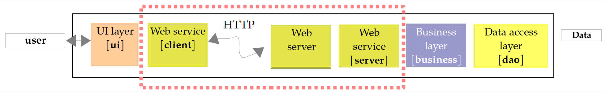
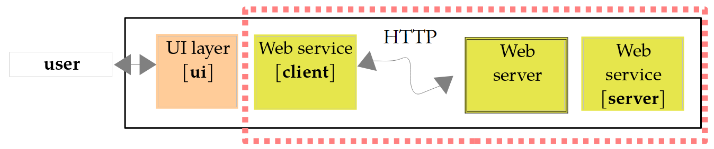

13. Webservices
13.1. Einführung
Im vorherigen Kapitel haben wir mehrere TCP/IP-Client-Server-Anwendungen vorgestellt. Da Clients und Server Textzeilen austauschen, können sie in jeder beliebigen Sprache geschrieben werden. Der Client muss lediglich das vom Server erwartete Kommunikationsprotokoll kennen.
Webservices sind ebenfalls Serveranwendungen (TCP/IP). Sie haben folgende Merkmale:
- Sie werden von Webservern gehostet, und das Austauschprotokoll zwischen Client und Server ist HTTP (HyperText Transfer Protocol), ein auf TCP/IP aufbauendes Protokoll, das wir im vorherigen Kapitel behandelt haben;
- Der Webservice hat ein standardisiertes Kommunikationsprotokoll, unabhängig vom angebotenen Dienst. Ein Webservice bietet verschiedene Dienste an: S1, S2 …, Sn. Jeder dieser Dienste erwartet vom Client übergebene Parameter und liefert dem Client ein Ergebnis zurück. Für jeden Dienst muss der Client Folgendes wissen:
- wie der Dienst Si angegeben wird;
- die Liste der zu übergebenden Parameter und ihre Typen;
- den Typ des vom Dienst zurückgelieferten Ergebnisses. Sind diese Angaben bekannt, verläuft der Dialog zwischen Client und Server nach demselben Schema, unabhängig davon, welcher Webservice abgefragt wird. Das vereinheitlicht die Kommunikation der Clients;
- Zum Schutz vor Angriffen aus dem Internet öffnen viele Organisationen auf ihren Servern nur bestimmte Ports nach außen: vor allem die Ports 80 (HTTP) und 443 (HTTPS) für den Webservice. Alle anderen Ports sind gesperrt. Folglich sind Client-Server-Anwendungen wie die im vorherigen Kapitel beschriebenen in der Regel auf das private Netzwerk (Intranet) der Organisation beschränkt. Das Hosten eines Dienstes auf einem Webserver macht ihn für die gesamte Internet-Community zugänglich;
- Der Webservice kann als entferntes Objekt betrachtet werden: Die von ihm angebotenen Dienste werden dann zu Methoden dieses Objekts. Ein Client kann dieses entfernte Objekt über ein Zwischenobjekt, einen sogenannten Proxy, der die gesamte Netzwerkkommunikation verbirgt, so verwenden, als wäre es lokal. So lässt sich ein Client bauen, der von dieser Schicht unabhängig ist: Ändert sich die Schicht, muss der Rest des Clients nicht angepasst werden;
- Wie bei den TCP/IP-Client-Server-Anwendungen aus dem vorherigen Kapitel können Client und Server in jeder beliebigen Programmiersprache geschrieben werden. Sie tauschen Textzeilen aus, die aus zwei Teilen bestehen: den vom HTTP-Protokoll verlangten Headern und dem Nachrichtenrumpf, dessen Format zwischen Client und Server vereinbart wird.
Die Architektur einer auf Webservices basierenden Client-Server-Anwendung sieht wie folgt aus:

Sie erweitert die Schichtenarchitektur aus Kapitel 6 um spezialisierte Netzwerkkommunikationsschichten: den Webservice-Client auf der Clientseite und den Webservice selbst auf der Serverseite. Eine ähnliche Architektur haben wir bereits beim TCP-Server zur Steuerberechnung (Version 8) aus dem vorherigen Kapitel kennengelernt.
13.1.1. Gestern: SOAP und WSDL
In den 2000er-Jahren folgten Webservices meist dem Standard SOAP (Simple Object Access Protocol). Der Client sendete eine HTTP-Anfrage, deren Rumpf ein XML-Dokument war: ein „Umschlag“ mit dem Namen der aufgerufenen Methode und ihren Parametern. Der Server antwortete mit einem weiteren XML-Umschlag, der das Ergebnis enthielt. Jeder Dienst wurde durch ein XML-Dokument im Format WSDL (Web Services Description Language) beschrieben, das unter der URL des Dienstes gefolgt von [?wsdl] verfügbar war: Es listete die Methoden, ihre Parameter und ihre Typen auf. Anhand dieses Dokuments generierten Werkzeuge automatisch den Proxy des Dienstes.
Auf der JVM wurden diese Dienste mit der API JAX-WS definiert: eine annotierte Klasse [@WebService], deren öffentliche Methoden (die mit [@WebMethod] annotiert sein konnten) zu den Methoden des Dienstes wurden; das Werkzeug [wsimport] generierte den Client-Proxy aus der WSDL. JAX-WS war von Java 6 bis Java 10 Teil des JDK; in Java 11 wurde es entfernt (JEP 320) und existiert heute außerhalb des JDK unter dem Namen Jakarta XML Web Services. Kotlin, das 2016 (in Version 1.0) erschien, gab es in jener Zeit noch nicht wirklich: JAX-WS lässt sich wie jede Java-Bibliothek aus Kotlin heraus verwenden, doch neue Dienste setzen es kaum noch ein. Zu den Gründen für diesen Wandel zählen die Schwerfälligkeit von XML und SOAP-Umschlägen, die Komplexität der zugehörigen Standards (WS-Security, WS-Addressing usw.) und die Schwierigkeit, diese Dienste aus einem Browser aufzurufen.
13.1.2. Heute: REST und JSON
Die meisten aktuellen Webservices folgen dem Stil REST (REpresentational State Transfer) und tauschen JSON-Dokumente aus (JavaScript Object Notation, vorgestellt in Kapitel 5). Der REST-Stil beruht auf folgenden Prinzipien:
- Der Dienst stellt Ressourcen bereit, die jeweils durch eine URL bezeichnet werden: [/tax], [/clients/12], [/clients/12/orders];
- Auf diese Ressourcen wird mit den Methoden (auch Verben genannt) des HTTP-Protokolls zugegriffen, von denen jede eine bestimmte Bedeutung hat;
- Das Ergebnis der Aktion wird durch den HTTP-Statuscode der Antwort angezeigt;
- Der Rumpf von Anfragen und Antworten ist meist ein JSON-Dokument, das kompakter und einfacher als XML ist;
- Der Dienst ist zustandslos: Jede Anfrage enthält alle zu ihrer Verarbeitung nötigen Informationen; der Server behält für einen bestimmten Client keine Informationen von einer Anfrage zur nächsten.
Die am häufigsten verwendeten HTTP-Methoden sind die folgenden:
Methode | Verwendung | Beispiel |
GET | Eine Ressource lesen; etwaige Parameter stehen in der URL | GET /clients/12 |
POST | Eine Ressource erstellen oder eine Verarbeitung anfordern; die Daten stehen im Rumpf der Anfrage | POST /clients |
PUT | Eine Ressource ersetzen | PUT /clients/12 |
PATCH | Einen Teil einer Ressource ändern | PATCH /clients/12 |
DELETE | Eine Ressource löschen | DELETE /clients/12 |
Die Statuscodes, die im vorherigen Kapitel eingeführt wurden, entfalten hier ihre volle Bedeutung:
Code | Bedeutung |
200 OK | Die Anfrage war erfolgreich; der Rumpf der Antwort enthält das Ergebnis |
201 Created | Die Ressource wurde erstellt; der Header [Location] enthält ihre URL |
204 No Content | Die Anfrage war erfolgreich; die Antwort hat keinen Rumpf |
400 Bad Request | Die Anfrage ist ungültig (fehlender oder ungültiger Parameter usw.) |
404 Not Found | Die angeforderte Ressource existiert nicht |
415 Unsupported Media Type | Der Typ des gesendeten Dokuments (Header [Content-Type]) wird nicht akzeptiert |
500 Internal Server Error | Auf dem Server ist ein unerwarteter Fehler aufgetreten |
Für einen REST-Dienst gibt es kein verpflichtendes Äquivalent zu WSDL. Es ist jedoch üblich, ihn mit einem OpenAPI-Dokument (früher Swagger) im JSON- oder YAML-Format zu beschreiben, aus dem Werkzeuge Dokumentation, Testseiten und Clients generieren können. Darauf kommen wir später zurück.
Schließlich sei gRPC erwähnt, von Google entworfen: Die Methoden des Dienstes und ihre Nachrichten werden in einer Datei [.proto] beschrieben, aus der Werkzeuge den Server und den Client generieren, ganz wie zu Zeiten von WSDL; die Nachrichten werden in einem kompakten Binärformat (Protocol Buffers) codiert und über HTTP/2 übertragen. gRPC ist sehr effizient und für die Kommunikation zwischen Diensten innerhalb derselben Organisation beliebt, für Browser jedoch schlecht geeignet. Es ist auf der JVM mit der Bibliothek [grpc-java] verfügbar, für Kotlin ergänzt um [grpc-kotlin] (die Funktionen in [suspend] und [Flow], Kapitel 9), die wir nicht verwenden werden.
13.1.3. Spring Boot und Spring MVC
Zum Schreiben unserer Webservices verwenden wir Spring Boot. In Kapitel 6 haben wir den Dependency-Injection-Container des Spring Frameworks genutzt. Dieses Framework enthält auch ein Webmodul, Spring MVC, das mithilfe von Annotationen eine URL und eine HTTP-Methode einer Funktion zuordnet: [@RestController] an der Klasse, [@GetMapping], [@PostMapping] usw. an ihren Methoden. Spring Boot (Version 1.0 im Jahr 2014, Version 4 im November 2025, mit Spring Framework 7) vereinfacht den Einsatz von Spring:
- Es konfiguriert die Anwendung automatisch anhand der verfügbaren Bibliotheken: Sind Spring MVC und Jackson vorhanden, richtet es alles ein, was für einen JSON-Webservice nötig ist, ohne eine einzige Konfigurationszeile;
- Es bettet den Webserver ein in die Anwendung: Der Tomcat-Server (Version 11) ist eine einfache Bibliothek, die vom Hauptprogramm gestartet wird. Es muss also kein separater Webserver oder Anwendungsserver (Tomcat, GlassFish, WildFly …) installiert werden, auf dem die Anwendung früher als [.war]-Archiv bereitgestellt wurde;
- Es stellt Starter bereit – Abhängigkeiten, die alles bündeln, was für einen bestimmten Anwendungsfall nötig ist. Der Starter [spring-boot-starter-webmvc] umfasst Spring MVC, Tomcat, Jackson 3 (Kapitel 5) und Logging (SLF4J und Logback);
- Es stellt eine Stückliste (Bill of Materials, BOM) bereit, die die Versionen all dieser miteinander kompatiblen Bibliotheken festlegt, sowie ein Gradle-Plugin, [org.springframework.boot], das die Anwendung startet ([gradlew bootRun]) und sie als einzelne ausführbare Datei ([.jar]) verpackt ([gradlew bootJar]).
Spring ist in Java geschrieben, behandelt Kotlin aber seit Spring Framework 5 (2017) als erstklassige Sprache: Die Dokumentation enthält Beispiele in beiden Sprachen, Spring unterstützt die nullbaren Typen von Kotlin, kann primäre Konstruktoren samt ihren Standardwerten aufrufen und stellt Kotlin-spezifische Erweiterungsfunktionen bereit ([runApplication], [getBean<T>()], [registerBean<T>()] aus Kapitel 6 …). Spring Boot ist nicht die einzige Lösung: Jakarta EE (früher Java EE) definiert den API-Standard JAX-RS (Jakarta RESTful Web Services), und auch Frameworks wie Quarkus, Micronaut und Helidon werden häufig mit Kotlin eingesetzt. Besonders hervorzuheben ist Ktor, das in Kotlin für Kotlin geschriebene Web-Framework von JetBrains: Seine Routen werden statt mit Annotationen mit einer dedizierten Sprache (DSL) beschrieben, und seine Handler sind [suspend]-Funktionen (Kapitel 9). Spring Boot ist jedoch am weitesten verbreitet und baut natürlich auf dem auf, was wir in Kapitel 6 behandelt haben.
13.2. Ein erster Webservice
Wir bauen unsere erste Client-Server-Anwendung mit der folgenden vereinfachten Architektur:

Die Projekte dieses Kapitels bilden einen Gradle-Multiprojekt-Build (Kapitel 6), den Ordner [13-web-services]:
Die Datei [settings.gradle.kts] listet die Teilprojekte auf:
- Zeilen 3–6: das Plugin, mit dem Gradle das JDK 25 selbst herunterladen kann, wenn es es auf dem Rechner nicht findet (Kapitel 2);
- Zeile 11: die sechs Teilprojekte, identifiziert über ihre Ordnernamen;
- Zeile 14: Der Build aus Kapitel 6 wird in diesen eingebunden (Composite Build, bereits in den Kapiteln 10 und 11 verwendet): Die Projekte [WsTax] und [ClientWsTax] dürfen von den Modulen der Version 5 der Steueranwendung [TaxV5] über ihre Koordinaten ([examples.tax:tax-business:5.0]) abhängen, und Gradle baut diese Module bei Bedarf aus ihrem Quellcode.
Das Wurzelprojekt deklariert die von den Teilprojekten verwendeten Plugins samt ihren Versionen, ohne sie anzuwenden:
- Zeile 4: das Kotlin-Plugin, das wir kennen;
- Zeile 5: das Plugin [all-open] für Spring, das in Kapitel 6 verwendet wurde. In Kotlin sind Klassen und ihre Funktionen standardmäßig final; Spring muss für einige seiner Klassen jedoch Unterklassen (Proxys) davon ableiten. Dieses Plugin macht die von Spring annotierten Klassen ([@Configuration], [@Component], [@RestController], [@SpringBootApplication] usw.) und ihre Methoden offen;
- Zeile 6: das Spring-Boot-Plugin.
Die Projekte sind im Kurscode bereits eingerichtet: Der Leser muss lediglich den Ordner [13-web-services] in IntelliJ IDEA öffnen, das ihn als Gradle-Build erkennt, oder in diesem Ordner den angegebenen Gradle-Befehl eingeben. Die Dienste werden mit [gradlew :WsHello:bootRun] gestartet (der Pfad [:WsHello] bezeichnet das Teilprojekt) und die Konsolen-Clients mit [gradlew -q :ClientWsHello:run]. Der Befehl [gradlew build] baut alle Projekte auf einmal.
Um selbst ein Spring-Boot-Projekt zu erstellen, verwendet man am einfachsten die Website Spring Initializr: Dort wählt man „Gradle - Kotlin“ (ein Gradle-Projekt, dessen Build-Dateien in Kotlin geschrieben sind), die Sprache Kotlin, die Spring-Boot-Version, den Projektnamen und seine Abhängigkeiten (hier „Spring Web“) und lädt dann eine ZIP-Datei mit einem sofort einsatzbereiten Projekt herunter: den Dateien [build.gradle.kts] und [settings.gradle.kts], dem Gradle Wrapper, der Hauptklasse und der Datei [application.properties]. IntelliJ IDEA (Ultimate Edition) bietet denselben Assistenten. Für ein Kotlin-Projekt fügt Spring Initializr automatisch die Abhängigkeiten [kotlin-reflect] und [jackson-module-kotlin] hinzu, auf die wir noch eingehen werden.
13.2.1. Die Serverseite

Die Datei [build.gradle.kts] im Projekt [WsHello] sieht wie folgt aus:
Erläuterungen:
- Zeilen 3–7: die drei Plugins ohne Versionsangabe – die Version wird vom Wurzelprojekt bestimmt. Das Spring-Boot-Plugin fügt dem Projekt die Task [bootRun] hinzu, die die Anwendung kompiliert und ausführt, sowie die Task [bootJar], die eine Datei namens [build/libs/WsHello-1.0.jar] erzeugt, die die Anwendung und alle ihre Abhängigkeiten enthält und anschließend mit [java -jar build/libs/WsHello-1.0.jar] gestartet wird. Das Plugin [application] muss nicht angewendet werden: Die Hauptklasse findet das Spring-Boot-Plugin, das nach der Funktion [main] sucht;
- Zeile 19: die Version 4.1.1 von Spring Boot (die Version des Plugins). Die Funktion [platform] importiert in das Projekt die Versionen mehrerer Hundert Bibliotheken, die vom Spring-Boot-Team ausgewählt und gemeinsam getestet wurden. Deshalb haben die Abhängigkeiten in den Zeilen 21–23 keine Versionen. Das entspricht dem Parent-Projekt [spring-boot-starter-parent] in einem Maven-Projekt;
- Zeile 21: der Web-Starter. Er liefert Spring MVC (Spring Framework 7.0), den eingebetteten Tomcat-11-Server, Jackson 3 und Logging;
- Zeile 23: die Kotlin-Reflection-Bibliothek. Die Java-Reflection ([java.lang.reflect]) sieht nur einen Teil dessen, was der Kotlin-Code ausdrückt: Sie weiß nicht, ob ein Parameter nullbar ist ([String?]), ob er einen Standardwert hat oder welcher der primäre Konstruktor einer Klasse ist. Spring liest diese Informationen mit [kotlin-reflect] (das die Metadaten dekodiert, die der Kotlin-Compiler in jeder [.class]-Datei speichert): Wir werden sehen, dass es sie für optionale Parameter nutzt. Verwendet wird die Version des Kotlin-Plugins.
- Zeile 31: die Compiler-Option [-java-parameters], die die Namen der Funktionsparameter in den [.class]-Dateien speichert. Spring benötigt sie, um einen Funktionsparameter ([name]) dem gleichnamigen Parameter einer URL zuzuordnen, und Jackson benötigt sie, um die Konstruktorparameter einer Data Class den Properties eines JSON-Dokuments zuzuordnen (Kapitel 5). Das Spring-Boot-Plugin aktiviert diese Option bereits, wenn es das Kotlin-Plugin erkennt; wir nehmen sie hier auf, um sie explizit zu machen;
- Zeilen 35–38: Von Gradle gestartete Programme schreiben ihre Ausgabe in UTF-8, damit Umlaute und andere Sonderzeichen unter Windows korrekt angezeigt werden (Kapitel 2).
Die Hauptklasse sieht wie folgt aus:
- Zeile 7: Die Annotation [@SpringBootApplication] vereint drei Annotationen: [@Configuration] (die Klasse kann Beans definieren, wie in Kapitel 6), [@EnableAutoConfiguration] (automatische Konfiguration anhand der verfügbaren Bibliotheken) und [@ComponentScan] (Spring sucht annotierte Klassen – Controller, Konfigurationen usw. – im Paket dieser Klasse und seinen Unterpaketen);
- Zeile 8: Die Klasse hat keinen Rumpf; sie dient nur als Träger der Annotation. Da sie (indirekt) mit [@Configuration] annotiert ist, macht das Plugin [plugin.spring] sie nicht final. Hier ist das nicht zwingend: Wir haben geprüft, dass die Anwendung auch startet, wenn die Klasse final bleibt, da Spring keine Konfigurationsklasse ableiten muss, die keine Beans definiert. Eine Konfigurationsklasse, die Beans mit Funktionen [@Bean] definiert – etwa der Dienst zur Steuerberechnung –, würde jedoch den Fehler [@Configuration class '...' may not be final] auslösen, dem wir in Kapitel 6 begegnet sind: Das Plugin kümmert sich darum;
- Zeilen 10–12: Das Hauptprogramm ist eine Funktion auf oberster Ebene, die in die Klasse [WsHelloApplicationKt] kompiliert wird. Die Funktion [runApplication<WsHelloApplication>(*args)], eine in Kotlin geschriebene Erweiterungsfunktion von Spring Boot, ersetzt den Java-Aufruf [SpringApplication.run(WsHelloApplication.class, args)]: Der Typ der Konfigurationsklasse wird als Typargument übergeben ([reified], Kapitel 4), und der Operator [*] (Spread) übergibt die Elemente des Arrays [args] an den Parameter [vararg] der Funktion (Kapitel 3). [runApplication] liest die Konfiguration (Datei [application.properties], Umgebungsvariablen, Befehlszeilenargumente), erzeugt den Spring-Container und seine Beans, startet den Tomcat-Server und gibt dann die Kontrolle zurück. Das Programm endet jedoch nicht: Die Tomcat-Threads warten auf Anfragen, bis die Anwendung beendet wird (Strg-C).
Die Konfiguration der Anwendung befindet sich in der Datei [src/main/resources/application.properties]:
- Zeile 2: der Name der Anwendung;
- Zeile 4: Der Server lauscht auf Port 5100 (standardmäßig 8080). Dieser Wert könnte auch als Argument übergeben werden: [gradlew :WsHello:bootRun --args=--server.port=5100], oder über die Umgebungsvariable [SERVER_PORT];
- Zeile 6: Standardmäßig zeigt Spring Boot beim Start ein großes Banner mit ASCII-Text an; wir entfernen es;
- Zeile 8: das Format der Log-Meldungen. Das Standardformat ist sehr umfassend (Datum, Level, Prozess-ID, Anwendungsname, Thread, vollständiger Klassenname, Meldung), führt aber zu sehr langen Zeilen. Wir reduzieren es auf die Uhrzeit, das Meldungslevel, den Namen des Threads, den kurzen Namen der ausgebenden Klasse ([%logger{0}]) und die Meldung.
Der Webservice selbst ist die Klasse [HelloController]. Sie stellt eine Funktion bereit, die die Zeichenkette [Hello Mrs xx] zurückgibt, wobei xx der empfangene Name ist:
Erläuterungen:
- Zeile 8: Die Annotation [@RestController] kennzeichnet die Klasse als Controller: Spring erzeugt beim Start eine einzige Instanz davon (einen Singleton) und leitet HTTP-Anfragen an sie weiter, deren URL einer ihrer Funktionen entspricht. Das Ergebnis jeder Methode wird unverändert im Rumpf der Antwort an den Client gesendet;
- Zeilen 12–13: Die Annotation [@GetMapping("/")] ordnet die HTTP-Methode GET und die URL [/] (die Wurzel der Site) der Funktion [home] zu, die einen Text mit einer Erklärung zur Verwendung des Dienstes zurückgibt. Die Funktion hat einen Ausdruckskörper ([= ...]): Ihr Typ, [String], wird abgeleitet. Die geschweiften Klammern in [{name}] sind in einem Kotlin-String nichts Besonderes: Nur das Zeichen [$] leitet ein Template ein;
- Zeilen 18–19: Das Template für die URL (der sogenannte Pfad) [/hello/{name}] enthält eine Variable [{name}]: Sie entspricht jedem URL-Segment, das nach [/hello/] steht. So weist die URL [/hello/Carla%20Bruni] den Wert [Carla Bruni] der Variablen [{name}] zu (der Code [%20] steht in einer URL für ein Leerzeichen). Die Annotation [@PathVariable] weist Spring an, diesen Wert an den gleichnamigen Parameter der Funktion zu übergeben: Das ist Data Binding. Die Funktion gibt eine mit einem Template erzeugte Zeichenkette zurück: Diese wird unverändert als Textdokument (Typ [text/plain]) an den Client gesendet;
- Zeilen 22–23: derselbe Vorgang, aber die Funktion gibt ein Objekt vom Typ [Greeting] zurück. Spring serialisiert es mit Jackson nach JSON (Kapitel 5) und sendet es als Dokument vom Typ [application/json] an den Client. Das ist das Standardformat für die Antwort eines REST-Webservices;
- Zeile 26: der Ergebnistyp, eine im Controller verschachtelte Data Class (Kapitel 4) (das Äquivalent eines Java-Records). Jackson serialisiert sie über ihre vom Compiler erzeugten Accessoren [getName()] und [getMessage()]: Jede Property wird zu einer JSON-Property mit demselben Namen.
Der Dienst wird mit dem Befehl [gradlew :WsHello:bootRun] gestartet, eingegeben im Ordner [13-web-services] (oder [..\gradlew bootRun] im Ordner [WsHello]: Der Wrapper liegt im Wurzelverzeichnis des Projekts). Das Ausführungsverzeichnis der Anwendung ist das des Teilprojekts. Der Dienst zeigt sein Log an (der Kurs hat die Pfade in Zeile 2 zu [...] abgekürzt und die Meldungen von Gradle weggelassen):
- Zeile 2: der Start der Anwendung, die Java-Version und das Laufzeitverzeichnis, also das Projektverzeichnis. Beachten Sie den Namen [WsHelloApplicationKt]: Spring Boot benennt die Anwendung nach der Klasse, die die Funktion [main] enthält – hier also nach der vom Kotlin-Compiler für die Datei [WsHelloApplication.kt] erzeugten Klasse, nicht nach der Klasse [WsHelloApplication];
- Zeile 3: Spring erlaubt es, Profile (Entwicklung, Test, Produktion usw.) zu definieren, die unterschiedliche Konfigurationen aktivieren (Dateien [application-dev.properties] usw.). Hier ist kein Profil aktiv;
- Zeilen 4–6: Der eingebettete Tomcat-Server wird erzeugt; er lauscht auf Port 5100;
- Zeile 7: Der Spring-Container ist bereit: Er hat seine Beans erzeugt, darunter unseren Controller;
- Zeilen 8–9: Tomcat nimmt nun Verbindungen an; die Anwendung ist bereit. Der Start dauerte auf unserem Testrechner etwa fünfzehn Sekunden, was recht langsam ist (und der Rechner war mit anderen Aufgaben beschäftigt); üblicherweise dauert er zwei oder drei Sekunden;
- Zeilen 10–12: Diese Meldungen erschienen bei der ersten Anfrage: Das Spring-Servlet [DispatcherServlet], das alle Anfragen entgegennimmt und auf die Methoden der Controller verteilt, wird erst an dieser Stelle initialisiert. Ein Servlet ist eine Java-Komponente, die Anfragen in einem Webserver wie Tomcat verarbeitet (Jakarta Servlet); Spring baut darauf auf. Der Thread-Name [http-nio-5100-exec-1]zeigt an, dass die Anfrage von einem der Threads des Tomcat-Servers verarbeitet wird;
- Zeilen 13–14: Diese Meldungen erschienen, als der Server nach den in den folgenden Absätzen beschriebenen Tests mit Strg-C heruntergefahren wurde: Das Herunterfahren erfolgt „geordnet“; Tomcat schließt noch laufende Anfragen ab, bevor er sich beendet.
Jede Log-Meldung enthält ihre Uhrzeit, ihr Level ([TRACE], [DEBUG], [INFO], [WARN], [ERROR]), den sendenden Thread und die sendende Klasse. Meldungen ab dem Level [INFO] aufwärts werden standardmäßig angezeigt; die Property [logging.level.<package>=DEBUG] zeigt für ein bestimmtes Paket auch Meldungen niedrigerer Level an.
13.2.2. Den Dienst mit curl abfragen
Solange der Dienst läuft, fragen wir ihn in einem zweiten Befehlsfenster mit dem im vorherigen Kapitel vorgestellten Werkzeug [curl] ab. Die Option [-i] zeigt die Header der Antwort vor dem Rumpf an, und die Option [-s] (silent) unterdrückt die Fortschrittsanzeige:
- Zeile 2: Die Anfrage war erfolgreich. Tomcat sendet den Text nicht, der üblicherweise auf den Statuscode folgt ([OK]): Er ist seit HTTP/1.1 optional (und existiert in HTTP/2 nicht mehr); nur der Code zählt;
- Zeile 3: Das Dokument ist ein Text (UTF-8);
- Zeile 4: die Größe des Dokuments in Bytes;
- Zeile 5: der Zeitpunkt der Antwort, in den HTTP-Headern stets in koordinierter Weltzeit (GMT) angegeben, während das Server-Log die Ortszeit verwendet;
- Zeile 7: das Ergebnis der Funktion [hello].
Fragen wir nun die JSON-Version ab:
- Zeile 3: Das Dokument hat nun den Typ [application/json]. Der Zeichensatz muss nicht angegeben werden: Ein über das Netzwerk ausgetauschtes JSON-Dokument ist immer in UTF-8 codiert (RFC 8259);
- Zeile 7: das serialisierte Objekt [Greeting]. Die JSON-Properties haben dieselben Namen wie die Properties der Data Class, [name] und [message], und sind in der Reihenfolge ihres primären Konstruktors aufgeführt. Das war nicht selbstverständlich: Standardmäßig sortiert Jackson 3 die Properties einer gewöhnlichen Klasse alphabetisch (das sehen wir bei der Klasse [ProblemDetail]), führt aber zuerst die Properties in ihrer Reihenfolge auf, die Parameter des Konstruktors sind, den es zum Erzeugen der Objekte gewählt hat. Dank der Option [javaParameters] kennt es die Namen dieser Parameter und erkennt den primären Konstruktor der Data Class. Da die Kotlin-Namen bereits in „camelCase“ vorliegen, wie in „JavaScript“ und „JSON“, muss nichts umgewandelt werden.
Eine URL, die zu keiner Route passt, liefert eine Antwort 404:
- Zeile 4: Das Dokument wird in Blöcken gesendet, denen jeweils ihre Größe vorangestellt ist; der Server musste die Gesamtgröße des Dokuments nicht berechnen, bevor er mit dem Senden begann;
- Zeile 7: das von Spring Boot erzeugte Fehlerdokument: das Datum, der Statuscode, sein Text und der angeforderte Pfad. Aus Sicherheitsgründen enthält es weder die Meldung einer etwaigen Exception noch den Aufrufstack (Properties [server.error.include-message] und [server.error.include-stacktrace], standardmäßig deaktiviert). Beim nächsten Dienst sehen wir, wie man ein standardisiertes Fehlerdokument erhält.
Sie können die URL [http://localhost:5100/hello/Carla Bruni] auch in die Adressleiste eines Browsers eingeben, der dann den empfangenen Text anzeigt: Ein per GET abgefragter Webservice lässt sich sehr einfach testen.
13.2.3. Ein Konsolen-Client

Es ist möglich, den Client des Dienstes mit einem einfachen TCP-Client zu schreiben, wie im vorherigen Kapitel: Man sendet einfach die HTTP-Anfrage und liest die Antwort. Wir verwenden jedoch die Klasse [java.net.http.HttpClient] aus dem JDK (Java 11), die ebenfalls im vorherigen Kapitel vorgestellt wurde; sie übernimmt für uns das HTTP-Protokoll und nutzt Jackson für die JSON-Dokumente. Das Projekt [ClientWsHello] ist ein gewöhnliches Kotlin-Projekt, dessen Datei [build.gradle.kts] die Jackson-Abhängigkeit und die Hauptklasse deklariert:
- Zeile 3: die Abhängigkeit von Jackson 3; sie hat eine Version, weil dieses Projekt nicht die Namenskonvention von Spring Boot verwendet;
- Zeile 11: Jackson benötigt die Namen der Konstruktorparameter, um aus einem JSON-Dokument ein Objekt [Greeting] zu erzeugen (Kapitel 5);
- Zeilen 15–17: die Hauptklasse, ausgeführt von [gradlew -q :ClientWsHello:run];
- Zeilen 20–22: Das Programm liest von der Tastatur.
Das Programm sieht wie folgt aus:
Erläuterungen:
- Zeile 13: Die JSON-Antwort des Dienstes wird in ein Objekt [Greeting] deserialisiert. Der Client hat keinen Zugriff auf den Typ [Greeting] des Servers: Er deklariert seinen eigenen, eine Data Class mit denselben Property-Namen. Ein Client teilt nicht den Code des Servers, sondern nur das Format der ausgetauschten Dokumente;
- Zeile 18: Die URL des Dienstes wird als Argument übergeben; andernfalls ist sie standardmäßig [http://localhost:5100/]: Ändert sich die Adresse des Dienstes, muss der Client nicht neu kompiliert werden. [firstOrNull()] liefert das erste Element des Arrays oder [null] , wenn es leer ist, und der Elvis-Operator [?:] ersetzt dieses [null] durch die Standard-URL;
- Zeile 20: der JSON-Konverter von Jackson 3 (Kapitel 5);
- Zeile 23: ein einziger [HttpClient] für das gesamte Programm. Er verwaltet eine Menge wiederverwendbarer Verbindungen und muss gemeinsam genutzt, nicht für jede Anfrage neu erzeugt werden. Ab Java 21 implementiert [HttpClient] das Interface [AutoCloseable]: Die Kotlin-Funktion [use] (Kapitel 3) schließt ihn am Ende des Blocks, auch wenn eine Exception auftritt;
- Zeilen 26–27: die Frage, gefolgt vom Lesen der Antwort; am Ende des Streams liefert [readlnOrNull] den Wert [null], den der Elvis-Operator in eine leere Zeichenkette umwandelt;
- Zeile 33: Der eingegebene Name wird zu einem URL-Segment: Dort nicht erlaubte Zeichen müssen codiert werden. [URLEncoder.encode] codiert das „é“ als [%C3%A9], ist aber für Formularparameter gedacht, bei denen ein Leerzeichen als [+] codiert wird. In einem URL-Pfad muss das Leerzeichen als [%20] codiert werden: Deshalb ersetzen wir das [+] (ein eingegebenes gültiges [+] wird als [%2B] codiert und ist davon nicht betroffen). [Charsets.UTF_8] ist die Kotlin-Konstante für den Zeichensatz UTF-8 (die Java-Konstante [StandardCharsets.UTF_8]funktioniert ebenfalls);
- Zeile 35: Die Methode [resolve] der Klasse [URI] erzeugt aus der Basis-URL und einer relativen URL eine URL. Achtung: Die Basis-URL muss mit [/] enden, damit [hello/...] angehängt wird. Die Funktion [get] wird als Methode von [HttpClient] aufgerufen: Es ist eine Erweiterungsfunktion, die weiter unten definiert wird;
- Zeilen 38–39: Die JSON-Antwort wird mit der Methode [readValue] von Jackson in ein Objekt [Greeting] deserialisiert;
- Zeilen 41–43: Die Exception [ConnectException] wird ausgelöst, wenn keine Verbindung zum Dienst möglich ist, zum Beispiel wenn an der angegebenen Adresse kein Dienst lauscht. Sie hat keine Meldung; wir erzeugen eine. Der Name [_] zeigt an, dass die Exception nicht verwendet wird. Dieser [catch]-Block muss dem in Zeile 44 vorausgehen, da [ConnectException] von [IOException] abgeleitet ist;
- Zeilen 44–46: andere Kommunikationsfehler und Fehlerantworten des Dienstes (siehe Zeile 59);
- Zeilen 54–61: eine GET-Anfrage, deren Antwortrumpf als Zeichenkette geliefert wird. Wir haben sie als Erweiterungsfunktion der Klasse [HttpClient] geschrieben (Kapitel 4): In ihrem Rumpf bezeichnet
[send]die Methode[send]des Clients, auf dem sie aufgerufen wird (*[this]*). In Java war das eine statische Methode, die den Client als Parameter erhielt; - Zeile 55: Die Anfrage wird mit einem Builder erzeugt: URL, die HTTP-Methode und dann [build];
- Zeile 56: Die Methode [send] sendet die Anfrage und wartet auf die Antwort. Ihr zweiter Parameter, ein [BodyHandler], legt fest, was mit dem Antwortrumpf geschehen soll: [ofString] liest ihn vollständig in eine Zeichenkette ein, die gemäß dem im Header [Content-Type] angegebenen Zeichensatz (standardmäßig UTF-8) dekodiert wird. [send] löst bei einem Kommunikationsfehler eine [IOException] aus und eine [InterruptedException] , wenn der Thread beim Warten unterbrochen wird. Da Kotlin keine geprüften Exceptions kennt, müssen weder die Funktion [get] noch die Funktion [main] sie deklarieren ([throws IOException, InterruptedException] in Java);
- Zeilen 58–59: Anders als andere Bibliotheken behandelt [HttpClient] einen Fehlerstatuscode (4xx, 5xx) nicht als Exception: Die Antwort wird normal zurückgegeben, und wir müssen ihren Statuscode selbst prüfen. Hier lösen wir bei jedem anderen Code als 2xx eine [IOException] aus.
Ergebnisse bei laufendem Dienst (die dem Programm über eine Umleitung übergebenen Eingabedaten wurden nach den Anfragen wieder eingefügt):
Zeile 4 zeigt das empfangene Objekt [Greeting] im Format der für Data Classes erzeugten Funktion [toString] an: [Greeting(name=…, message=…)], wo ein Java-Record zuvor [Greeting[name=…, message=…]] anzeigte. Die Gradle-Option [-q] (quiet) unterdrückt die eigenen Meldungen von Gradle. Wenn Sie eine Adresse angeben, an der kein Dienst lauscht, wird die Verbindung verweigert:
Und wenn die URL des Dienstes falsch ist, liefert der Dienst eine Antwort 404:
Die Klasse [Greeting] des Clients hat zwei nicht nullbare Properties vom Typ [String]. Was würde geschehen, wenn der Dienst eine davon – etwa [message] – weglassen würde? Jackson würde den Konstruktor mit dem Wert [null] für den Parameter [message] aufrufen, und es wäre der vom Kotlin-Compiler erzeugte Code – der am Eingang jeder öffentlichen Funktion prüft, dass ihre nicht nullbaren Parameter nicht [null] sind –, der diesen Wert ablehnen würde. Wir haben das mit einem kleinen Testprogramm überprüft:
Die Null-Sicherheit bleibt also selbst bei per Reflection erzeugten Objekten [null] erhalten. Eine fehlende Property vom Typ [Int] wird dagegen von Jackson 3 selbst abgelehnt (***[Cannot mapnullinto typeint]***). Damit eine Property fehlen darf, wird sie als nullbar deklariert ([String?], [Int?]); das werden wir in den folgenden Diensten tun. Das Kotlin-Modul von Jackson, [jackson-module-kotlin] (Abhängigkeit [tools.jackson.module:jackson-module-kotlin]), geht einen Schritt weiter: Es berücksichtigt Standardwerte für Parameter (eine fehlende Property erhält den Standardwert) und liefert spezifischere Fehlermeldungen. Außerdem stellt es die Erweiterungsfunktion [mapper.readValue<Greeting>(json)] bereit, die [mapper.readValue(json, Greeting::class.java)] ersetzt. Wird es zu den Abhängigkeiten einer Spring-Boot-Anwendung hinzugefügt, registriert die Anwendung es automatisch beim JSON-Konverter von Spring (MVC); Spring Initializr fügt es Kotlin-Projekten ebenfalls hinzu. Wir werden es in diesem Kurs nicht verwenden, da die Data Classes und die Option [javaParameters] für unsere Zwecke ausreichen.
Bei einem SOAP-Dienst verwendete der Client einen aus der WSDL des Dienstes generierten Proxy und rief die entfernte Methode wie eine lokale Methode auf. Hier rufen wir die URL des Dienstes direkt auf. Wir werden einen echten Proxy für den Dienst zur Steuerberechnung schreiben.
13.2.4. Dienstbeschreibung: OpenAPI
Die WSDL beschrieb einen SOAP-Dienst in einem standardisierten Format. Ihr heutiges Äquivalent ist das OpenAPI-Dokument. Für Spring Boot generiert die Bibliothek [springdoc-openapi] (Abhängigkeit [org.springdoc:springdoc-openapi-starter-webmvc-ui]) es ohne eine einzige Codezeile: Sie durchsucht beim Start die Controller und ihre Annotationen und veröffentlicht das Dokument unter der URL [/v3/api-docs] sowie eine interaktive Testseite, Swagger UI, unter der URL [/swagger-ui.html]. Das Dokument beschreibt jede Route: ihre URL, ihre HTTP-Methode, ihre Parameter und deren Typen sowie das JSON-Schema ihrer Antworten. Bei Kotlin berücksichtigt es die Nullbarkeit der Typen: Eine Property vom Typ [String] wird als erforderlich deklariert, eine Property vom Typ [String?] ist optional. Generatoren wie OpenAPI Generator nutzen dies, um einen typisierten Client in verschiedenen Sprachen (auch Kotlin) zu generieren, so wie [wsimport] es mit WSDL tat. Diese Bibliothek ist kein Bestandteil von Spring Boot, und wir werden sie in diesem Kapitel nicht verwenden.
13.3. Ein Webservice für arithmetische Operationen
Der vorherige Dienst bot nur eine einzige Funktion. Wir betrachten nun einen Webservice, der die vier Grundrechenarten bereitstellt: add(a, b), subtract(a, b), multiply(a, b) und divide(a, b). Dabei untersuchen wir die beiden Möglichkeiten, Parameter an einen Webservice zu übergeben, und wie Fehler gemeldet werden.
13.3.1. Die Serverseite
Der Dienst [WsOperations] akzeptiert zwei Arten von Anfragen:
Anfrage | Parameter |
GET /add?a=1.5&b=2 | Die Operation im URL-Pfad, die Zahlen im Query-String |
POST /calculation | Ein JSON-Dokument im Body der Anfrage: [{"operation":"add","a":1.5,"b":2}] |
In beiden Fällen ist die Antwort ein JSON-Dokument: [{"operation":"add","a":1.5,"b":2.0,"result":3.5}]. GET eignet sich für einfache Anfragen, die auf dem Server nichts verändern: Die URL kann in einen Browser eingegeben und als Lesezeichen gespeichert werden, und ihre Antwort kann zwischengespeichert werden. POST eignet sich für umfangreiche oder strukturierte Daten. Die Datei [build.gradle.kts] des Projekts ist bis auf den Kommentar identisch mit der von [WsHello], und seine Datei [WsOperationsApplication.kt] ist identisch mit der von [WsHello], abgesehen von den Namen ([WsOperationsApplication], Paket [wsoperations]). Die Datei [application.properties] sieht wie folgt aus:
- Zeile 4: Der Service lauscht auf Port 5110;
- Zeile 6: Fehler, die von Spring MVC selbst erkannt werden (unbekannte URL, ungültiges JSON-Dokument, nicht unterstützter Dokumenttyp usw.), werden über eine Antwort im Format Problem Details gemeldet. Dieses durch RFC 9457 standardisierte Format ist ein JSON-Dokument vom Typ [application/problem+json] , das einen Fehler beschreibt: seinen Typ, einen Titel, den Statuscode, ein Detail und gegebenenfalls zusätzliche Informationen. Dies ist der Standardweg, mit dem ein REST-Service mitteilt, was nicht stimmt.
Der Controller sieht wie folgt aus:
Erläuterungen:
- Zeilen 20–25: die GET-Anfrage. Der Parameter [operation] der Funktion ist an die Routenvariable [{operation}] ([@PathVariable]) gebunden. Die Parameter [a] und [b], die mit [@RequestParam] annotiert sind, sind an die gleichnamigen Parameter des Query-Strings ([?a=1.5&b=2]) gebunden. Sie sind optional: Ein fehlender Parameter hat standardmäßig den Wert [null]. In Java musste man ihn als ([@RequestParam(required = false) String a]) schreiben; in Kotlin deklariert man den Parameter einfach als nullable, [String?]: Spring liest die Nullbarkeit des Typs über [kotlin-reflect] und schließt daraus, dass der Parameter optional ist. Umgekehrt ist ein nicht nullable Parameter ([String]) erforderlich: Spring würde eine Anfrage, in der dieser Parameter fehlt, mit einer 400-Antwort abweisen. Der deklarierte Typ teilt also sowohl dem Compiler als auch Spring mit, was fehlen darf;
- Zeilen 23–24: [a] und [b] sind als Typ [String?] deklariert. Wir hätten sie auch als Typ [Double?] deklarieren können: Spring hätte dann die Konvertierung selbst vorgenommen und einen fehlerhaften Wert mit einer 400-Antwort mit der generischen Meldung abgewiesen. Indem wir sie als Zeichenketten entgegennehmen, behalten wir die Kontrolle über die Fehlermeldungen;
- Zeile 25: Die Funktion hat einen Ausdruckskörper. Ihr Rückgabetyp [ResponseEntity<*>] ist explizit angegeben: Der Sternchen-Typ [*] (Kapitel 4) bezeichnet eine Antwort, deren Body-Typ nicht festgelegt ist, und entspricht dem [ResponseEntity<?>] von Java;
- Zeilen 29–31: die POST-Anfrage. Der Parameter [request], der mit [@RequestBody] annotiert ist, wird von Jackson aus dem JSON-Body der Anfrage erzeugt. Die Eigenschaften der Klasse [CalculationRequest] sind nullable (Zeile 79): Eine im JSON-Dokument fehlende Eigenschaft wird dann auf [null] gesetzt, wodurch sie erkannt werden kann;
- Zeile 35: Konvertierung einer Zeichenkette in eine Zahl; schlägt die Konvertierung fehl ([null]), wird dies als Ausdruck geschrieben. Der Operator [?.] reicht das [null] einer fehlenden Zeichenkette weiter; die Kotlin-Funktion [toDoubleOrNull] gibt [null] zurück, statt eine Exception auszulösen; die Funktion [takeIf] gibt ihr Objekt zurück, wenn die Bedingung wahr ist, andernfalls [null] : Hier weist sie die Werte [NaN] und Unendlich zurück, die [toDoubleOrNull] akzeptiert (die Texte [NaN] und [Infinity]). Sowohl in URLs als auch in JSON werden Zahlen mit Dezimalpunkt geschrieben: [toDoubleOrNull], das von der Systemsprache unabhängig ist, ist daher das richtige Werkzeug (und nicht [NumberFormat], das auf einem französischen Server ein Komma erwarten würde; siehe Kapitel 5). In Java war ein Block [try]/[catch] um [Double.parseDouble] erforderlich;
- Zeile 40: der Name der Operation in Kleinbuchstaben. Die Kotlin-Funktion [lowercase] führt die Konvertierung unabhängig von der Systemsprache durch (sie verwendet [Locale.ROOT], was in Java angegeben werden musste);
- Zeilen 42–47: Die angeforderte Operation wird durch eine Funktion vom Typ [(Double, Double) -> Double] (Kapitel 7) dargestellt, die nullable ist: [((Double, Double) -> Double)?]. Ein [when]-Ausdruck wählt das zur Operation passende Lambda aus; [null] wird für eine unbekannte Operation verwendet. Der deklarierte Typ von
*[calculation]ermöglicht es dem Compiler, die Typen der Lambda-Parameter*[x]und*[y]* abzuleiten; - Zeilen 50–64: Die drei Parameter werden validiert. Ist einer davon fehlerhaft, wird eine Fehlerliste aufgebaut: ein Dictionary, das jedem Parameter die Liste seiner Fehlermeldungen zuordnet. Die Funktion [buildMap], die zur selben Familie gehört wie [buildString] und [buildList] (Kapitel 5), erzeugt ein veränderliches Dictionary und übergibt es als Receiver ([this]) an den Block, in dem [put] es füllt und anschließend schreibgeschützt macht; es behält die Einfügereihenfolge bei;
- Zeilen 60–64: die 400-Antwort. Die Spring-Klasse [ProblemDetail] stellt ein „Problem Details“-Dokument dar: [forStatus] erzeugt es mit einem Statuscode. Die Funktion [apply] (Kapitel 4) führt den Block mit dem erzeugten Objekt als Receiver aus und gibt dieses Objekt anschließend zurück: Sein Titel wird durch Schreiben der Eigenschaft [title] gesetzt (Kotlin behandelt die Java-Methoden [getTitle]/[setTitle] als Eigenschaften), und mit [setProperty] wird eine beliebige Eigenschaft hinzugefügt – in diesem Fall [errors], die Fehlerliste. Die Klasse [ResponseEntity] stellt eine vollständige HTTP-Antwort dar: Statuscode, Header und Body. [ResponseEntity.badRequest()] bereitet eine 400-Antwort vor, und [body] liefert deren Body;
- Zeile 66: Nach dem [return] in Zeile 64 weiß der Compiler, dass [calculation], [a] und [b] nicht [null] sind: Es handelt sich um lokale Variablen (oder Parameter), die sich nicht mehr ändern können. Er behandelt sie nun als Werte nicht nullbarer Typen [(Double, Double) -> Double] und [Double]: Das ist der in Kapitel 3 besprochene „Smart Cast“. Wir haben den Test so aufgebaut, dass er davon profitiert: Der Java-Code testete jeden Parameter einzeln und sammelte Fehler in einem Dictionary und prüfte dann, ob das Dictionary leer war; diese abschließende Prüfung würde dem Compiler jedoch nichts über [a] und [b] mitteilen;
- Zeilen 68–72: Eine Division durch null führt zu einer 400-Antwort, und diesmal enthält das Dokument ein Detail ([forStatusAndDetail]). Diese Zurückweisung ist notwendig: Die Division eines [Double] durch null löst keine Exception aus, sondern ergibt unendlich ([Double.POSITIVE_INFINITY]), was ein JSON-Dokument nicht darstellen kann (Jackson würde es als Zeichenkette schreiben, ["Infinity"]). Der Test [b == 0.0] vergleicht zwei [Double]-Werte: Das Literal muss [0.0] lauten, weil Kotlin den Vergleich eines [Double] mit einem [Int] verweigert ([b == 0] führt zu dem Kompilierfehler [operator '==' cannot be applied to 'Double' and 'Int']);
- Zeile 75: die 200-Antwort, deren Body das in JSON serialisierte Objekt [CalculationResult] ist. [calculation(a, b)] ruft die oben ausgewählte Funktion auf;
- Zeilen 79–82: die beiden mit den Clients ausgetauschten Typen. Diese Objekte, die nur dazu dienen, Daten zwischen zwei Anwendungen zu transportieren, heißen DTO (Data Transfer Object). Data-Klassen sind dafür ideal. Die Eigenschaften von [CalculationRequest], die vom Client empfangen werden, sind nullable; die von [CalculationResult], die vom Service erzeugt werden, sind es nicht.
Die beiden Controller-Funktionen geben den Typ [ResponseEntity<*>] zurück: eine Antwort, deren Body von beliebigem Typ sein kann, hier ein [CalculationResult] oder ein [ProblemDetail]. Spring untersucht den tatsächlichen Typ des Bodys, um ihn zu serialisieren; es weist dem Dokument den Typ [application/json] oder [application/problem+json] für ein [ProblemDetail] zu.
13.3.2. Tests mit curl
Der Service wird mit [gradlew :WsOperations:bootRun] gestartet. Eine Addition:
Aus der Zahl 2 ist 2.0 geworden: Jackson schreibt ein [Double] immer mit seinem Dezimalteil. Für einen Client – insbesondere JavaScript – ist es dieselbe Zahl. Eine Division durch null:
- Zeile 2: Die Anfrage wird abgewiesen;
- Zeile 3: Der Body ist ein „Problem Details“-Dokument;
- Zeile 6: Nach einer 400-Antwort schließt Tomcat die Verbindung vorsorglich: Eine ungültige Anfrage könnte unerwartete Daten in der Verbindung hinterlassen haben. Der Client öffnet für seine nächste Anfrage eine neue Verbindung;
- Zeile 8: Das Dokument enthält die Eigenschaften [title], [status] und [detail], die von unserem Code gesetzt wurden, sowie [instance], das von Spring hinzugefügt wurde: der Pfad der Anfrage, die den Fehler verursacht hat. Die Eigenschaft [type] – eine URL, die den Fehlertyp dokumentiert – fehlt: RFC 9457 weist ihr dann den Wert [about:blank] zu, was bedeutet, dass der Statuscode ausreicht, um das Problem zu beschreiben. Beachten Sie, dass die Eigenschaften alphabetisch sortiert sind: Dies ist das Standardverhalten von Jackson 3 für eine gewöhnliche Java-Klasse wie [ProblemDetail], deren Objekte nicht über einen parametrisierten Konstruktor erzeugt werden; Data-Klassen behalten, wie wir gesehen haben, die Reihenfolge ihres Primärkonstruktors bei.
Eine unbekannte Operation, eine Zahl mit Dezimalkomma und eine fehlende Zahl:
Die Eigenschaft [errors] des Dokuments enthält die Validierungsfehler, Parameter für Parameter; da sie mit [setProperty] hinzugefügt wurde, steht sie nach den normalisierten Eigenschaften. Der Parameter [b], der in der URL fehlt, wurde tatsächlich als [null] empfangen: Er ist optional, weil er nullable ist. Nun eine POST-Anfrage. Die Option [-d] von [curl] sendet den darauffolgenden Text im Body einer POST-Anfrage, und die Option [-H] fügt der Anfrage einen Header hinzu, hier den Typ des gesendeten Dokuments:
Eine im JSON-Dokument fehlende Eigenschaft, hier [operation], wird als [null] empfangen, dank des nullable Typs der Eigenschaft [operation] von [CalculationRequest]; die Operation ist dann unbekannt:
Ist das gesendete JSON-Dokument fehlerhaft, kann Jackson den Parameter [request] nicht erzeugen: Spring liefert von sich aus einen 400-Fehler, ohne unsere Funktion auszuführen:
Das „Problem Details“-Dokument in Zeile 8 wurde von Spring MVC dank der Eigenschaft [spring.mvc.problemdetails.enabled] erzeugt; ohne sie erhielten wir das bei [WsHello] gesehene Fehlerdokument von Spring Boot. Dasselbe gilt, wenn der Header [Content-Type] weggelassen wird: [curl] sendet den Body dann als HTML-Formular, und Spring weist diesen Dokumenttyp zurück:
Der Fehlercode 415 (Unsupported Media Type) bedeutet, dass der Typ des gesendeten Dokuments nicht akzeptiert wird; der Header [Accept] in Zeile 3 teilt dem Client mit, welche Typen akzeptiert werden.
13.3.3. Die Client-Seite
Unser Konsolen-Client fragt die Operation und die beiden Zahlen in einer einzigen Zeile ab und ruft dann den Service zweimal auf: zuerst mit GET, dann mit POST, um beide Methoden zu demonstrieren. Seine Datei [build.gradle.kts] ist identisch mit der von [ClientWsHello], abgesehen von den Namen des Projekts und der Hauptklasse ([clientwsoperations.MainKt]). Sein Programm sieht wie folgt aus:
1 2 3 4 5 6 7 8 9 10 11 12 13 14 15 16 17 18 19 20 21 22 23 24 25 26 27 28 29 30 31 32 33 34 35 36 37 38 39 40 41 42 43 44 45 46 47 48 49 50 51 52 53 54 55 56 57 58 59 60 61 62 63 64 65 66 67 68 69 70 71 72 73 74 75 76 77 78 79 80 81 82 83 84 85 86 87 88 89 90 91 92 93 94 95 96 97 98 99 100 101 102 103 104 105 106 107 108 109 110 111 112 113 114 115 | |
Erläuterungen:
- Zeilen 14–23: die DTO-Dateien des Clients. Sie werden hier erneut deklariert: Ein Client teilt nicht den Code des Servers, sondern nur das Format der ausgetauschten JSON-Dokumente. Die Eigenschaften von [CalculationRequest] sind nicht nullable: Der Client sendet nur vollständige Anfragen. Die Spring-Klasse [ProblemDetail] gehört zum Web-Framework; für den Client genügt eine einfache Data-Klasse. Ihre Eigenschaften sind nullable: Eine im Dokument fehlende Eigenschaft wie [detail] oder [errors] wird als [null] behandelt;
- Zeile 27: Zahlen werden im Format der Systemsprache eingegeben und angezeigt, hier Englisch: Dezimalpunkt. [FORMAT] ist eine Top-Level-Eigenschaft, die privat für die Datei ist;
- Zeile 33: Ab Jackson 3 werden JSON-Eigenschaften, die der Klasse unbekannt sind (hier [instance]), bei der Deserialisierung standardmäßig ignoriert;
- Zeilen 43–49: Die Eingabe wird mit einem regulären Ausdruck (ein oder mehrere Leerzeichen) in Felder aufgeteilt, dann wird die Liste mit drei Elementen in drei Variablen entpackt (Kapitel 3): Die Deklaration [val (operation, textA, textB) = fields] ruft die Funktionen [component1()], [component2()], und [component3()] der Liste auf;
- Zeilen 50–58: Die Zahlen werden lokal geprüft, bevor ein Aufruf des Services erfolgt. Ein Service muss seine Parameter immer prüfen (da er nicht weiß, wer ihn aufruft), ein Client kann jedoch unnötigen Netzwerkverkehr vermeiden. Nach [continue] in Zeile 59 weiß der Compiler, dass [a] und [b] nicht [null] sind: Sie haben nun den Typ [Double] (intelligente Typkonvertierung);
- Zeile 61: der Text, der die Berechnung beschreibt, mit den Zahlen im Format der Systemsprache;
- Zeile 64: die URL der GET-Anfrage. Zahlen müssen mit Dezimalpunkt geschrieben werden: Ein in ein String-Template eingefügtes [Double] wird durch seine Funktion [toString] konvertiert, die von der Systemsprache unabhängig ist. Die vom Benutzer eingegebene Operation wird mit [URLEncoder] kodiert;
- Zeilen 66–67: die GET-Anfrage;
- Zeilen 68–70: Bei Erfolg (Statuscode 200) wird die JSON-Antwort in ein Objekt [CalculationResult] deserialisiert;
- Zeilen 72–73: Schlägt die Anfrage fehl, werden der Statuscode und das empfangene Dokument unverändert angezeigt;
- Zeilen 75–77: Die Exception [IOException] zeigt einen Kommunikationsfehler an, etwa einen nicht erreichbaren Service;
- Zeilen 82–86: die POST-Anfrage. Das Objekt [CalculationRequest] wird von [writeValueAsString] in JSON serialisiert; die Anfrage erhält den Header [Content-Type], gefolgt von ihrem Body: [BodyPublishers.ofString] sendet eine Zeichenkette, kodiert als UTF-8;
- Zeilen 94–98: Schlägt die Validierung fehl, ist der Body ein „Problem Details“-Dokument, das in ein Objekt [Problem] deserialisiert wird und dessen Titel, Details und Validierungsfehler angezeigt werden. Die nullable Eigenschaften [detail] und [errors] werden mit dem Operator [?.] behandelt: [problem.detail?.let { ... }] führt den Block nur aus, wenn das Detail existiert ([it] hat dann den Typ [String]), und [problem.errors?.forEach { ... }] durchläuft das Dictionary nur, wenn es existiert. Das an [forEach] übergebene Lambda erhält jedes Element des Dictionarys ([Map.Entry]), entpackt in [(parameter, messages)] (Kapitel 7); die Funktion [joinToString] verbindet die Meldungen eines Parameters;
- Zeilen 110–114: Lesen einer Zahl im Format der Systemsprache. Die Methode [parse(String, ParsePosition)] von [NumberFormat] liest den Anfang der Zeichenkette und gibt im Objekt [ParsePosition] an, wo sie aufgehört hat (Eigenschaft [index], Java-Methode [getIndex()]): Hat sie nicht am Ende aufgehört, enthält die Eingabe überzählige Zeichen ([2.5x]). [parse] gibt eine [Number] (oder [null]) zurück, die durch [toDouble()] konvertiert wird.
Ergebnisse bei laufendem Service (Eingaben nach den Anfragen ersetzt):
- Zeile 3: die URL der GET-Anfrage: Die dort eingegebene Zahl 2 wird als 2.0 geschrieben;
- Zeilen 6–8: derselbe Fehler, in beiden Anfragen beobachtet: das Rohdokument bei der GET-Anfrage und seine Verarbeitung bei der POST-Anfrage;
- Zeilen 10–12: Die unbekannte Operation wurde vom Service erkannt;
- Zeile 14: Die fehlerhafte Zahl wurde vom Client erkannt, der den Service nicht aufgerufen hat.
13.4. Beispielanwendung – Version 9: ein Webservice zur Steuerberechnung
Wir kommen auf die Anwendung zur Steuerberechnung zurück. Im vorherigen Kapitel (Version 8) hatten wir einen Server namens TCP erstellt, der über ein eigenes Kommunikationsprotokoll aus der Ferne abgefragt werden konnte. Wir machen daraus nun einen Webservice namens REST.
13.4.1. Die Architektur
Die Architektur von Version 9 sieht wie folgt aus:

- Auf der Serverseite empfängt der Webservice [WsTax] HTTP-Anfragen und lässt sie von den Schichten [business] und [dao] aus Version 5 (Kapitel 6) verarbeiten, die unverändert wiederverwendet werden;
- auf der Client-Seite wird die Schicht [ui] aus Version 5 ebenfalls unverändert wiederverwendet. Sie kommuniziert mit einer neuen Art von Schicht [business], [TaxBusinessHttp], die die Schnittstelle [ITaxBusiness] implementiert, indem sie den Webservice abfragt: Sie fungiert als Proxy für den Service. Die Schicht [ui] weiß nicht, dass die Berechnung auf einem anderen Rechner erfolgt;
- auf beiden Seiten übernimmt der Dependency-Injection-Container von Spring die Integration der Schichten, wie in Version 5.
13.4.2. Der Webservice
Der Servicevertrag sieht wie folgt aus:
Anfrage | Antwort bei Erfolg | Antwort im Fehlerfall |
GET /tax?married=y&children=2&salary=60000 | 200: [{"tax":4282}] | 400: „Problem Details“-Dokument |
POST /tax mit dem Body [{"married":true,"children":2,"salary":60000}] | 200: [{"tax":4282}] | 400: „Problem Details“-Dokument |
Das Projekt [WsTax] hängt von den Modulen [tax-dao] und [tax-business] aus Version 5 ab. Dank des in [settings.gradle.kts] deklarierten Composite Builds ([includeBuild("../06-architectures")]) findet Gradle sie direkt im Ordner von Kapitel 6 und baut sie bei Bedarf: Anders als bei Maven müssen sie nicht vorher in einem lokalen Repository installiert werden. Die Abhängigkeiten der Datei [build.gradle.kts] von [WsTax] lauten wie folgt (der Rest der Datei ist bis auf die Projektkoordinaten identisch mit dem von [WsHello]: [examples.tax:WsTax:9.0]):
- Zeilen 2–5: die Abhängigkeiten jedes in Kotlin geschriebenen Spring-Boot-Services;
- Zeile 8: das Modul [tax-business] aus Version 5, identifiziert durch seine Koordinaten. Es deklariert das Modul [tax-dao] als Abhängigkeit seiner API ([api(project(":TaxV5:tax-dao"))], Kapitel 6): Dieses Modul ist daher auch für den Service sichtbar, ebenso die Klassen [ITaxDao], [JsonTax] … aus der Schicht [dao] und [TaxBracket] sowie [TaxException] aus der Schicht [entities]. Das Modul [tax-dao] hängt von Jackson 3 ab, das der Web-Starter bereits mitbringt; daher wird die von der Abhängigkeitsliste von Spring Boot ausgewählte Version verwendet.
Die Konfigurationsdatei [application.properties] sieht wie folgt aus:
- Zeile 4: Der Service lauscht auf Port 5120;
- Zeilen 13–14: die Konfiguration der Schicht [dao] im selben Format wie in der Datei [tax.properties] aus Version 5: die zu verwendende Implementierung und ihre Datendatei. Dies sind keine Spring-Boot-Eigenschaften, sondern Eigenschaften, die für unsere Anwendung spezifisch sind: Eine Datei [application.properties] kann beliebig viele davon enthalten. Hier verwenden wir die JSON-Datei [TaxData.json], die sich im Projektordner befindet, der bei [gradlew :WsTax:bootRun] zugleich der Laufzeitordner des Services ist.
Die Schichten [dao] und [business] werden über eine Konfigurationsklasse in den Spring-Container integriert:
Erläuterungen:
- Zeilen 17–18: Die Konfigurationseigenschaften [dao.*] werden in einem Objekt vom Typ [DaoProperties] zusammengefasst, einer Data-Klasse. Die Annotation [@ConfigurationProperties("dao")] weist Spring Boot an, die Eigenschaften mit dem Präfix [dao] auf die gleichnamigen Konstruktorparameter abzubilden: [dao.implementation] auf den Parameter [implementation], [dao.file] auf den Parameter [file]. Für in der Konfiguration fehlende Eigenschaften werden die Standardwerte der Parameter verwendet: Spring Boot, das den Primärkonstruktor und seine Standardwerte über [kotlin-reflect] liest, kann den Konstruktor ohne die fehlenden Argumente aufrufen. Wir haben das überprüft, indem wir den Service ohne die Datei [application.properties] gestartet haben: Er verwendete die Implementierung [HardwiredTax]. Diese Bindung ist typisiert (eine Eigenschaft vom Typ [Int] oder [Boolean] würde konvertiert, und ein fehlerhafter Wert würde den Start verhindern), und das resultierende Objekt ist unveränderlich;
- Zeile 22: Die Annotation registriert die Klasse [DaoProperties] bei Spring Boot, das das Objekt beim Start erzeugt und zu einer Bean macht. Sie können auch [@ConfigurationPropertiesScan] an der Hauptklasse anbringen: Spring Boot sucht dann selbstständig nach Klassen, die mit [@ConfigurationProperties] annotiert sind;
- Zeilen 21–23: Die Annotation [@Configuration] (Kapitel 6): Die Klasse definiert Beans. Spring findet sie, weil sie sich im selben Paket wie die Hauptklasse befindet ([@ComponentScan]). Das Plugin [plugin.spring] macht sie samt ihren Funktionen open;
- Zeilen 27–32: Die annotierte Funktion [@Bean] erzeugt die Schicht [dao]. Ihr Parameter wird von Spring bereitgestellt: Es ist die Bean [DaoProperties]. Ein [when]-Ausdruck wählt die Implementierung aus; eine unbekannte Implementierung löst eine [TaxException] aus ([throw] ist in Kotlin ein Ausdruck: Er kann in einem Zweig von [when] stehen);
- Zeile 38: die Schicht [business]. Der Parameter [dao] der Funktion erhält die Bean vom Typ [ITaxDao]: Spring erzeugt also die Schicht [dao] vor der Schicht [business].
In Kapitel 6 hatten wir jede Eigenschaft einzeln mit der Annotation [@Value] injiziert: [@Value("\${dao.implementation}") implementation: String]. Dieser Ansatz ist mit Spring Boot weiterhin möglich; beachten Sie, dass in Kotlin das Zeichen [$] in [${...}] mit einem Backslash maskiert werden muss, da der Compiler es sonst als String-Template interpretieren würde. [@ConfigurationProperties] ist vorzuziehen, sobald eine Gruppe von Eigenschaften zusammengehört: Die Konfiguration wird durch eine Klasse beschrieben, die typisiert ist und beim Start validiert wird, und sie wird als ein Block überall dort injiziert, wo sie benötigt wird. Die Funktionen [dao] und [business] entsprechen denen der Klasse [TaxConfig] aus Version 5, jedoch ohne die Annotation [@PropertySource]: Spring Boot liest die Datei [application.properties] selbst.
Diese Zeilen ersetzen die Integration der Schichten, die in Version 5 vom Hauptprogramm übernommen wurde: Der Spring-Container ist derselbe, doch Spring Boot erzeugt ihn nun und findet die Konfigurationsklasse selbstständig. Die auf diese Weise definierten Beans sind Singletons, die beim Start der Anwendung erzeugt werden, bevor Anfragen verarbeitet werden: Fehlt die Datendatei oder ist sie fehlerhaft, startet der Service nicht, anstatt auf alle Anfragen mit einem 500-Fehler zu antworten. Das überprüfen wir später.
Der Webservice ist der Controller [TaxController]:
Erläuterungen:
- Zeile 17: Der Controller erhält die Schicht [business] über seinen Primärkonstruktor. Spring, das den Controller erzeugt, übergibt ihm die Bean [ITaxBusiness], die von [TaxConfig] definiert wird: Das ist die in Kapitel 6 besprochene Konstruktorinjektion. Die Eigenschaft [business], die im Konstruktor als [private val] deklariert ist, stellt sicher, dass sich die Schicht nicht ändert. Der Java-Code benötigte ein [final]-Feld und einen vierzeiligen Konstruktor;
- Zeilen 20–31: die GET-Anfrage. Die drei Parameter des Query-Strings werden als nullable Zeichenketten empfangen (und sind daher optional) und konvertiert: [y]/[n] zu [isMarried] (ein [when]-Ausdruck vom Typ [Boolean?], bei dem der Wert [null] von [married?.lowercase()] in den Zweig [else] fällt), Ganzzahlen für [children] und [salary] über [toIntOrNull] und [null] im Fehlerfall;
- Zeilen 35–37: die POST-Anfrage: Das JSON-Dokument im Body wird in ein Objekt [TaxRequest] (Zeile 72) deserialisiert, dessen nullable Eigenschaften ([Boolean?], [Int?]) es erlauben, fehlende Werte zu erkennen. Dieselbe URL [/tax] ist je nach HTTP-Methode der Anfrage mit zwei Funktionen verknüpft;
- Zeilen 40–60: die beiden Anfragen gemeinsame Verarbeitung. Sie gibt bei Erfolg eine Antwort zurück und löst bei einem Fehler eine Exception aus. Der Ergebnistyp ist, wie bei den Funktionen [calculateGet] und [calculatePost], daher einfach [TaxResponse]: Anhand ihrer Signaturen erkennt man, was der Service zurückgibt, wenn alles gut geht;
- Zeile 42: Sind die drei Parameter korrekt? Die Vergleiche [children >= 0] und [salary >= 0] werden dank der verzögerten Auswertung des Operators [&&] nur ausgewertet, wenn die Werte nicht [null] sind; der Compiler weiß das und behandelt [children] ab dem auf den Test folgenden Vergleich als [Int] . Innerhalb des Blocks haben [married], [children] und [salary] nicht nullable Typen: Sie können an die Funktion [calculateTax] der Schicht [business] übergeben werden, deren Parameter die Typen [Boolean] und [Int] haben;
- Zeile 43: Die Berechnung wird an die Schicht [business] aus Version 5 delegiert;
- Zeile 44: Jede Berechnung wird auf der Stufe [INFO] protokolliert. Der Meldungstext ist ein Template: Jedes [{}] wird der Reihe nach durch das entsprechende Argument ersetzt. Anders als bei einem Kotlin-String-Template (["Tax(married=$married...)"]) wird die Meldung nur dann erzeugt, wenn sie angezeigt werden muss (abhängig von der Log-Stufe), und Logging-Werkzeuge können jeden Wert einzeln erfassen;
- Zeilen 48–60: Im Fehlerfall wird die Fehlerliste aufgebaut, eine Warnung ([warn]) protokolliert und eine Exception vom Typ [BadRequestException] ausgelöst, die diese Liste trägt;
- Zeilen 64–68: Eine mit [@ExceptionHandler] annotierte Funktion fungiert als Exception-Handler: Spring ruft sie auf, wenn eine Controller-Funktion eine Exception des Typs auslöst, der durch ihren Parameter angegeben ist, hier [BadRequestException]. Was sie zurückgibt, wird zur HTTP-Antwort: ein [ProblemDetail], dessen Statuscode (400) zum Statuscode der Antwort wird. Das Dokument wird mithilfe von [apply] in einem einzigen Ausdruck aufgebaut und ausgegeben;
- Zeilen 72–75: die DTOs des Services;
- Zeilen 77–79: das Klassen-Log. Spring Boot verwendet die Logging-API SLF4J (Simple Logging Facade for Java), die hier mit Logback implementiert ist. [LoggerFactory.getLogger] gibt einen Logger zurück, dessen Kategorie der vollständige Name der Klasse ist. Der Logger wird von allen Instanzen der Klasse gemeinsam genutzt: Er wird in ihrem Companion Object abgelegt, dem Äquivalent des [static]-Felds in Java (Kapitel 4). Er kann auch als privates Top-Level-Property in der Datei deklariert werden.
Die Exception [BadRequestException] sieht wie folgt aus:
- Zeile 5: Die Fehlerliste ist eine im Primärkonstruktor deklarierte Eigenschaft, die auch zur Erzeugung der Meldung dient, die an den Konstruktor der Elternklasse [RuntimeException] übergeben wird. In Kotlin sind alle Exceptions ungeprüft: Keine Funktion muss sie deklarieren. Die drei Zeilen dieser Klasse ersetzen die rund zwanzig Zeilen der Java-Version: Es müssen keine Accessoren geschrieben und keine Serialisierungsversionsnummer ([serialVersionUID]) deklariert werden, da der Kotlin-Compiler die entsprechende Warnung des Java-Compilers nicht ausgibt; und wenn wir die Eigenschaft [errors] von der binären Serialisierung ausschließen wollten – wie es das Java-Schlüsselwort [transient] tat –, würden wir sie mit [@Transient] annotieren. Unsere Exceptions werden nie serialisiert.
Die Hauptklasse [WsTaxApplication.kt] ist identisch mit der der beiden anderen Services. Der Ordner [src/main/resources/static] enthält den Web-Client, der im folgenden Abschnitt behandelt wird.
Der Webservice ist zustandslos: Die Controller-Funktionen behalten von einer Anfrage zur nächsten keinen Zustand. Der Controller und die Schichten [business] und [dao] sind Singletons, die einmalig erzeugt werden und so lange existieren wie die Anwendung; sie werden von allen Anfragen gemeinsam genutzt, die gleichzeitig von verschiedenen Threads des Tomcat-Servers verarbeitet werden können (Kapitel 8). Das ist hier kein Problem, weil diese Objekte nach ihrer Erzeugung nie verändert werden: Die Steuerstufen werden einmalig gelesen, und der Controller hat nur eine Eigenschaft, [val]. Ein Controller sollte niemals anfragespezifische Daten in seinen Eigenschaften speichern. Singleton ist der Standard-Scope für Spring-Beans; es gibt aber noch weitere: [prototype] (ein Objekt pro Anfrage an den Container), [request] (ein Objekt pro HTTP-Anfrage), [session] (ein Objekt pro HTTP-Sitzung). Beachten Sie schließlich, dass die Eigenschaft [spring.threads.virtual.enabled=true] bewirkt, dass jede Anfrage von einem virtuellen Thread (Java 21, Kapitel 8) statt von einem Thread aus dem Tomcat-Pool verarbeitet wird: Der Service kann dann eine sehr große Zahl gleichzeitiger Anfragen bearbeiten, die auf I/O-Operationen warten. Spring MVC unterstützt auch Controller-Funktionen mit [suspend] (Kapitel 9); diese Möglichkeiten sind besonders nützlich mit Spring WebFlux, der nicht blockierenden Variante von Spring MVC, bei der eine Anfrage während des Wartens keinen Thread belegt.
13.4.3. Den Service ausführen
Beginnen wir mit einem Konfigurationsfehler. Kommandozeilenargumente der Form [--property=value] gehören zur Konfiguration der Anwendung und überschreiben die Werte in [application.properties]. Bei Gradle werden sie an die Task [bootRun] mit der Option [--args] übergeben. Nehmen wir eine nicht vorhandene Datendatei (im Kurs wurden die – sehr langen – Zeilen dieses Logs durch [...] abgekürzt und die Gradle-Meldungen weggelassen):
- Zeile 4: Der Tomcat-Server wurde erzeugt, hat aber seinen Port noch nicht geöffnet;
- Zeile 6: Die Erzeugung der Bean ist fehlgeschlagen. Um den Controller zu erzeugen, musste Spring die Schicht [business] und damit die Schicht [dao] erzeugen, deren Konstruktor eine [TaxException] (Kapitel 6) instanziierte. Die Meldungen unserer Schichten sind, wie die von Spring, auf Englisch;
- Zeile 7: Der Tomcat-Server wird gestoppt; der Service hat keine Anfragen angenommen;
- Zeilen 9–21: der Bericht zum Startfehler. Seine Beschreibung (Zeile 17) und die empfohlene Maßnahme (Zeile 21) werden von einer Klasse erzeugt, die wir dafür geschrieben haben.
Tatsächlich zeigt Spring Boot bei einem Startfehler normalerweise die Exception und den gesamten Aufrufstapel an: Dutzende Zeilen, in denen die nützliche Meldung schwer zu finden ist. Spring Boot kann die Exception auch an Failure Analyzer übergeben, die sie in einen lesbaren Bericht übersetzen. Es stellt Analyzer für die häufigsten Fehler bereit (Port bereits belegt, Bean nicht gefunden usw.), und wir können eigene hinzufügen:
- Zeile 9: Die abstrakte Klasse
*[AbstractFailureAnalyzer<T>]*von Spring Boot sucht in der Kette der Ursachen, die zu der den Start verhindernden Exception geführt haben, nach einer Exception vom Typ[T]*– hier*[TaxException]*. Findet sie eine, ruft sie die Funktion [analyze] auf. Unsere Klasse leitet sich davon ab: Die Klammern in [AbstractFailureAnalyzer<TaxException>()]* stehen für den Aufruf ihres Konstruktors; - Zeile 11: Der Parameter [rootFailure] ist die ursprüngliche Exception, und [cause] ist die [TaxException] , die in der Kette gefunden wurde. Die Neudefinition wird durch das Schlüsselwort [override] gekennzeichnet, das in Kotlin erforderlich ist. In der Java-Klasse von Spring Boot darf die Methode [null] zurückgeben („Diese Exception kann ich nicht analysieren“); unsere Überschreibung deklariert einen nicht nullable Rückgabetyp, [FailureAnalysis], was Kotlin erlaubt: Eine Überschreibung darf den Typ ihres Rückgabewerts einschränken;
- Zeilen 13–14: die Fehlerbeschreibung: die Meldung der Exception, gefolgt in Klammern von der Meldung ihrer möglichen Ursache. [cause.cause?.let { ... } ?: ""] gibt den Text in Klammern zurück, wenn die Ursache existiert, andernfalls eine leere Zeichenkette;
- Zeilen 16–17: Der Bericht ist ein Objekt [FailureAnalysis], bestehend aus einer Beschreibung, einer empfohlenen Maßnahme und der analysierten Exception.
Dieser Analyzer ist keine Bean (er muss auch funktionieren, wenn der Container nicht erzeugt werden konnte): Spring Boot sucht ihn in den Dateien [META-INF/spring.factories] der Bibliotheken und der Anwendung. Unserer befindet sich in [src/main/resources/META-INF]:
- Zeile 2: Der Schlüssel ist der Name der Schnittstelle [FailureAnalyzer], und der Wert ist der Name unserer Klasse (mehrere Klassen würden durch Kommas getrennt).
Starten wir den Service nun wie gewohnt mit [gradlew :WsTax:bootRun] und fragen ihn dann mit [curl] ab:
Das ist das erwartete Ergebnis: Ein verheirateter Steuerpflichtiger mit zwei Kindern und einem Jahreseinkommen von 60.000 Euro zahlt 4.282 Euro Steuern (beachten Sie, dass die verwendete Steuertabelle – die von 2004 – nur für dieses Steuerjahr beibehalten wird). Mit fehlerhaften Parametern:
Dann per POST, mit einem JSON-Dokument:
Das Log des Services zeigen wir am Ende des Kapitels: Es enthält eine Aufzeichnung aller angeforderten Berechnungen.
13.4.4. Der Konsolen-Client: eine neue Schicht [business]
Der Client von Version 9 verwendet die Schicht [ui] aus Version 5 unverändert wieder: das Objekt [tax.ui.Dialog], dessen Funktion [run(business: ITaxBusiness)] mit dem Benutzer interagiert und bei der ihr übergebenen Schicht [business] Berechnungen anfordert. Es genügt, ihr eine Schicht [business] zu übergeben, die den Webservice abfragt. Die Abhängigkeiten des Projekts [ClientWsTax] lauten wie folgt (der Rest der Datei [build.gradle.kts] ist bis auf die Namen des Projekts und der Hauptklasse identisch mit der von [ClientWsHello]: [examples.tax:ClientWsTax:9.0], [tax.client.MainKt]):
- Zeilen 3–4: die Module von Version 5: [tax-business] für die Schnittstelle [ITaxBusiness], [tax-ui] für das Objekt [Dialog]. Ein Projekt kann von einem Modul abhängen, das ein Hauptprogramm enthält; in diesem Fall verwendet es die öffentlichen Klassen des Moduls, ohne das Programm auszuführen. Das Modul [tax-dao] ist eine API-Abhängigkeit, die ihrerseits von [tax-business] abhängt: Der Client verwendet davon nur die Klasse [TaxException];
- Zeile 6: der Spring-Container. Das Modul [tax-ui] hängt davon ab, deklariert ihn aber über [implementation] (Kapitel 6): Die Bibliothek ist beim Ausführen des Clients vorhanden, aber beim Kompilieren seines Codes nicht sichtbar. Gradle unterscheidet also zwischen dem, was ein Modul intern verwendet, und dem, was es nach außen bereitstellt ([api]); da unser Hauptprogramm Spring direkt verwendet, muss es es selbst deklarieren (während Maven alle indirekten Abhängigkeiten sichtbar machte);
- Zeile 8: Jackson, für JSON-Dokumente. Es wird ebenfalls von [tax-dao] bereitgestellt, aber auch hier als interne Abhängigkeit: Der Client, der es direkt verwendet, muss es deklarieren.
Die neue Schicht [business] ist die Klasse [TaxBusinessHttp]:
Erläuterungen:
- Zeile 14: Die Klasse implementiert die Schnittstelle [ITaxBusiness] aus Version 5. Über ihren Primärkonstruktor erhält sie den HTTP-Client, den sie zu einer privaten Eigenschaft macht ([private val client]), und die URL des Services, einen einfachen Konstruktorparameter;
- Zeilen 17–19: die DTOs, innerhalb der Klasse deklariert ([private]), weil sie sonst niemand verwendet;
- Zeilen 22–23: die URL der Funktion [POST /tax], bei der Initialisierung der Eigenschaft aus dem Wert des Services berechnet (der Parameter [serviceUrl] des Primärkonstruktors kann in Property-Initialisierern verwendet werden), und der JSON-Konverter;
- Zeilen 27–31: die Anfrage [POST /tax], mit der in ihrem Body als JSON serialisierten Anfrage;
- Zeilen 32–34: Die Anfrage wird synchron gesendet: Die Methode [send] wartet auf die Antwort, was für die Funktion [calculateTax] der Schnittstelle passend ist, die selbst synchron ist (sie gibt einen [Int] zurück). [try] ist in Kotlin ein Ausdruck (Kapitel 3): Sein Wert – hier die Antwort – ist der des Blocks [try], wenn alles gut geht; da Blöcke der Form [catch] mit einem [throw] (vom Typ [Nothing]) enden, hat die Variable [response] den Typ [HttpResponse<String>] und kann ein [val] sein, während man sie in Java vor dem [try] deklarieren musste;
- Zeilen 35–37: [send] löst eine [IOException] aus, wenn der Service nicht erreichbar ist. Sie wird in eine [TaxException], die Anwendungs-Exception [Tax], verpackt. Kotlin verlangt das nicht (es kennt keine geprüften Exceptions), aber es ist eine bewährte Vorgehensweise in einer Schichtenarchitektur: Die Schicht [ui] behandelt nur Anwendungs-Exceptions, nicht solche, die mit dem von der Schicht [business] verwendeten Kommunikationsmechanismus zusammenhängen;
- Zeilen 38–41: Dasselbe gilt für die [InterruptedException]-Exception, die ausgelöst wird, wenn der Thread beim Warten unterbrochen wird. Das Abfangen der Exception löscht das Unterbrechungs-Flag des Threads: Bewährte Vorgehensweise (Kapitel 8) ist es, es mit [Thread.currentThread().interrupt()] zurückzusetzen, damit der aufrufende Code weiß, dass der Thread unterbrochen wurde;
- Zeilen 44–47: Eine Fehlerantwort wird in eine [TaxException] umgewandelt, deren Code der HTTP-Statuscode ist. Der Konstruktor von [TaxException] (Kapitel 6) hat einen Parameter [cause] mit einem Standardwert; um den Code ohne Angabe einer Ursache zu setzen, wird das Argument benannt: [code = response.statusCode()];
- Zeile 51: Die JSON-Antwort [{"tax":4282}] wird deserialisiert, und der Steuerbetrag wird zurückgegeben.
Bei einem SOAP-Service erzeugte das Werkzeug [wsimport] einen Proxy, und eine ähnliche Klasse implementierte [ITaxBusiness] , indem sie die Berechnung an ihn delegierte: Heute schreiben wir die wenigen Dutzend Zeilen des Proxys selbst.
Da die Funktion [calculateTax] der Schnittstelle [ITaxBusiness] synchron ist, haben wir die synchrone Methode [send] von [HttpClient] verwendet. Dieser bietet auch eine asynchrone Methode, [sendAsync], die sofort ein [CompletableFuture<HttpResponse<T>>] zurückgibt. In Kotlin würden wir sie aus einer [suspend]-Funktion aufrufen und mit der Erweiterungsfunktion [await()] aus kotlinx-coroutines auf das Ergebnis warten (Kapitel 9): [suspend fun calculateTax(married: Boolean, nbChildren: Int, salary: Int): Int]. Das würde erfordern, die Schnittstelle [ITaxBusiness], ihre Implementierungen und die Schicht [ui] zu ändern. Wir haben darauf verzichtet, um die Schichten aus Version 5 unangetastet zu lassen. Mit virtuellen Threads (Java 21) wird synchroner Code wieder zu einer vernünftigen Art, Programme mit viel I/O zu schreiben: Ein von [send] blockierter virtueller Thread blockiert keine Systemthreads.
Das Hauptprogramm des Clients integriert die Schichten:
Erläuterungen:
- Zeile 14: die URL des Services, als Argument übergeben oder standardmäßig [http://localhost:5120/];
- Zeile 18: der Spring-Container, wie in Version 5. Er wird am Ende des Blocks [use] geschlossen. Der Wert des Blocks – sein letzter Ausdruck – wird von [use] zurückgegeben: Es ist der Exit-Code des Programms;
- Zeilen 20–22: Drei Beans werden mit den Erweiterungsfunktionen [registerBean<T>] von Spring für Kotlin registriert (Kapitel 6): die URL des Services und der HTTP-Client, jeweils durch Lambdas bereitgestellt, gefolgt von der Klasse [TaxBusinessHttp]. Um diese Klasse zu erzeugen, untersucht Spring ihren Primärkonstruktor und übergibt ihr die Beans der Typen [HttpClient] und [URI];
- Zeile 23: Der Container erzeugt die Beans;
- Zeile 24: Beim Container wird eine Bean vom Typ [ITaxBusiness] angefordert; er gibt das Objekt [TaxBusinessHttp] zurück, das diese Schnittstelle implementiert. Der Rest des Programms kennt die Implementierung nicht;
- Zeile 28: der Dialog aus Version 5, ohne jede Änderung; wird er normal beendet, ist der Wert des Blocks [try] sein letzter Ausdruck, 0;
- Zeilen 30–32: Ist der Service nicht erreichbar, wird die Exception von der Schicht [business] über die Schicht [ui] weitergereicht, die sie nicht behandelt: Sie wird mit der Funktion [Dialog.displayError] aus Version 5 angezeigt, und der Wert von [try] ist der des Blocks [catch], nämlich 1;
- Zeilen 36–37: Tritt ein Fehler auf, beendet sich das Programm nach dem Schließen des Containers mit dem Code 1. [exitProcess] ist die Kotlin-Funktion, die [System.exit] aufruft; ihr Rückgabetyp ist [Nothing], weil sie die Kontrolle nie zurückgibt.
Ergebnisse bei laufendem Service (Eingaben nach den Anfragen ersetzt):
Wir sehen die Kontrollwerte der Steuerberechnung: 4.282, 2.959 und 11.519 Euro. Die fehlerhafte Eingabe in Zeile 8 wurde von der Schicht [ui] erkannt, die die Schicht [business] nicht aufgerufen hat: Der Service hat nur korrekte Anfragen erhalten. Wird der Service gestoppt:
Die [TaxException] unseres Proxys kapselt die [ConnectException], die von [send] ausgelöst wurde und die ihrerseits die Exceptions der Netzwerkschicht kapselt (Kapitel 12). Keine davon hat eine Meldung: Ihre Eigenschaft [message] ist auf [null] gesetzt, was das String-Template von [displayError] als [null] anzeigt.
13.5. Ein Web-Client für den Steuerberechnungsservice
Eine „traditionelle“ Webanwendung erzeugt ihre HTML-Seiten auf dem Server: Bei jedem Klick auf eine Schaltfläche wird das Formular an den Server gesendet, der dem Browser eine neue, vollständige Seite zurückgibt. Heute fragt der Browser meist direkt in JavaScript einen Webservice ab und aktualisiert nur den Teil der Seite, der sich geändert hat. Genau das werden wir tun. Die Architektur sieht wie folgt aus:

- 1: Der Browser fordert die Seite [/] an; der Server [WsTax] sendet ihm die statische Datei [index.html];
- 2: Bei jedem Klick auf die Schaltfläche [Calculate] sendet der JavaScript-Code der Seite die Anfrage [POST /tax] an den Webservice und zeigt den empfangenen Steuerbetrag auf der Seite an, ohne sie neu zu laden.
Der Webservice wurde nicht verändert: Er liefert lediglich eine zusätzliche Datei aus. Spring Boot liefert Dateien, die im Ordner [static] innerhalb der Ressourcen der Anwendung ([src/main/resources/static]) liegen, automatisch als statische Dateien aus: HTML-Seiten, Bilder, Skripte, Stylesheets usw. Die Datei [static/index.html] wird auch für die URL [/] ausgeliefert: Sie ist die Startseite. Ein einziger Server kann somit sowohl eine Website als auch einen Webservice hosten. Die Seite [index.html], die völlig unabhängig von der Sprache ist, in der der Service geschrieben ist (sie ist dieselbe wie im Java-Kurs), sieht wie folgt aus:
1 2 3 4 5 6 7 8 9 10 11 12 13 14 15 16 17 18 19 20 21 22 23 24 25 26 27 28 29 30 31 32 33 34 35 36 37 38 39 40 41 42 43 44 45 46 47 48 49 50 51 52 53 54 55 56 57 58 59 60 61 62 63 64 65 66 67 68 69 70 71 72 73 74 75 76 77 78 79 80 81 82 83 84 85 86 87 88 89 90 91 92 93 94 95 96 97 98 99 100 101 102 103 104 105 106 107 108 109 110 | |
Erläuterungen:
- Zeilen 15–44: das Formular: zwei Optionsfelder für den Familienstand, zwei Eingabefelder für die Zahl der Kinder und das Gehalt – jeweils gefolgt von einer Zelle, in der gegebenenfalls eine Fehlermeldung angezeigt wird –, ein Feld für die Steuer, ein Absatz für eine allgemeine Meldung und zwei Schaltflächen;
- Zeilen 46–108: der JavaScript-Code der Seite, der vom Browser ausgeführt wird. Dieser Kurs behandelt JavaScript nicht; der Code ist Kotlin jedoch ähnlich genug, um leicht verständlich zu sein;
- Zeile 58: Eine Eingabe, die keine Ganzzahl ist, ergibt [null]; es ist Aufgabe des Services, den Fehler zu melden;
- Zeile 70: der Click-Handler der Schaltfläche [Calculate] (Formular absenden). Dies ist eine asynchrone Funktion ([async]): Wie eine Kotlin-Funktion (Kapitel 9) blockiert sie den Browser beim Warten auf eine Antwort nicht;
- Zeile 71: Wir verhindern, dass der Browser das Formular von sich aus absendet, was das Laden einer neuen Seite auslösen würde;
- Zeilen 74–77: die Anfrage, ein JavaScript-Objekt, das das von [POST /tax] erwartete Format hat;
- Zeilen 80–83: Die Funktion [fetch] des Browsers sendet die HTTP-Anfrage: die Methode [POST], den Header [Content-Type] und den Body – die von [JSON.stringify] in JSON serialisierte Anfrage. Die URL und [tax] sind relativ zur Seite: Die Anfrage wird an den Server gesendet, der die Seite geliefert hat. [await] wartet auf die Antwort, ohne den Browser zu blockieren, ähnlich dem Aufruf einer [suspend]-Funktion in einer Coroutine;
- Zeile 85: Der JSON-Body der Antwort wird in ein JavaScript-Objekt deserialisiert;
- Zeilen 86–88: Bei Erfolg (Code 2xx) wird die Steuer angezeigt;
- Zeilen 91–94: Tritt ein Fehler auf, werden der Titel des Dokuments „Problem Details“ sowie die Fehlermeldungen zur Kinderzahl und zum Gehalt angezeigt, jeweils neben dem zugehörigen Eingabefeld. Der Operator [?.] gibt [undefined] zurück, wenn das Objekt links davon nicht existiert, anstatt einen Fehler zu verursachen; der Operator [??] ersetzt einen fehlenden Wert durch den darauffolgenden Wert. Aufmerksame Leser haben den Safe Call [?.] und den Elvis-Operator [?:] aus Kotlin wiedererkannt, die JavaScript 2020 übernommen hat;
- Zeilen 103–106: Die Schaltfläche [Clear] setzt das Formular lokal zurück, ohne den Service abzufragen.
Nun, da der Service läuft, rufen wir die URL [http://localhost:5120/] mit einem Browser auf:

Nach der Eingabe einer Berechnung und einem Klick auf die Schaltfläche [Calculate]:

Ist die Eingabe fehlerhaft, stammen die Fehlermeldungen vom Webservice:

Diese Screenshots wurden mit dem Browser Chromium aufgenommen, der über die Bibliothek Playwright von einem Programm gesteuert wird: So automatisiert man das Testen einer Weboberfläche. Wir haben das Experiment mit dem in Kotlin geschriebenen Service wiederholt: Die Seite, die Antworten und damit die Screenshots sind identisch mit denen des in Java geschriebenen Services. Das ist der ganze Sinn eines Webservices: Sein Client sieht nur die ausgetauschten Dokumente.
Hier haben die Seite und der Service denselben Origin (gleiches Protokoll, gleicher Rechner, gleicher Port: [http://localhost:5120]). Würde die Seite von einer anderen Site ausgeliefert, zum Beispiel von [http://localhost:5000], würde der Browser die Same-Origin-Policy durchsetzen: Er würde dem JavaScript-Code nur dann erlauben, die Antwort des Services zu lesen, wenn der Service dies über den Header [Access-Control-Allow-Origin] erlaubt. Bei einer Anfrage wie unserer (POST mit einem JSON-Body) würde der Browser diese Erlaubnis sogar vor dem Senden der Anfrage einholen, über eine vorgeschaltete Anfrage mit der Methode OPTIONS (Preflight). Das ist der Mechanismus CORS (Cross-Origin Resource Sharing), der den Benutzer vor bösartigen Seiten schützt, die versuchen könnten, ohne sein Wissen Services zu nutzen, bei denen der Benutzer angemeldet ist. Um andere Origins zu akzeptieren, kann ein Spring-Controller mit [@CrossOrigin(origins = ["http://localhost:5000"])] annotiert werden (in Kotlin wird ein Argument vom Typ Array in einer Annotation in eckigen Klammern geschrieben); auch eine globale Konfiguration ist möglich (die Methode [addCorsMappings] der Schnittstelle [WebMvcConfigurer]). Clients, die keine Browser sind ([curl], unsere Konsolen-Clients), sind von CORS nicht betroffen.
Für umfangreichere, serverseitig erzeugte Weboberflächen bietet Spring MVC außerdem Controller, die aus Templates (zum Beispiel Thymeleaf) erzeugte HTML-Seiten zurückgeben; das geht über den Rahmen dieses Kurses hinaus. Kotlin bietet auch eine eigene Lösung: Kotlin/JS und Kotlin/Wasm kompilieren Kotlin-Code für den Browser, sodass der Web-Client in derselben Sprache wie der Service geschrieben werden kann und bei Bedarf die DTO-Data-Klassen gemeinsam genutzt werden können (Kotlin-Multiplatform-Projekte).
13.6. Ein Webservice ist unabhängig von der Sprache seines Clients
Bei einem SOAP-Service musste der Client über ein Werkzeug verfügen, das WSDL lesen und den Proxy erzeugen konnte, und Unterschiede bei der Auslegung der Standards auf den verschiedenen Plattformen führten häufig zu Interoperabilitätsproblemen. Bei einem REST/JSON-Service kann jede Sprache, die einen HTTP-Client und eine JSON-Bibliothek hat, also jede aktuelle Sprache, den Service ohne besondere Werkzeuge abfragen. Das haben wir bereits mit [curl]gesehen, das nicht in Kotlin geschrieben ist, und mit dem JavaScript im Browser. Hier ist ein Client für Node.js, die Laufzeitumgebung für JavaScript außerhalb des Browsers:
- Zeile 3: die URL des Services, als Argument übergeben oder als Standardwert festgelegt;
- Zeilen 6–9: drei Berechnungsanfragen, von denen die letzte fehlerhaft ist;
- Zeilen 14–17: dieselbe Funktion [fetch] wie im Browser;
- Zeilen 20–23: Anzeige des Steuerbetrags oder der Fehler.
Sobald der Service läuft:
In Python würden wir entsprechend das Modul [requests] oder [httpx] verwenden, in C# die Klasse [HttpClient] und in Java die Klasse [HttpClient], die wir von Kotlin aus verwendet haben. Zum Schluss folgt das Log des Services [WsTax] während aller Tests in diesem Kapitel ([curl], Konsolen-Client, Browser, Node.js-Client), bis er mit Strg-C beendet wurde (der Kurs hat die Pfade in Zeile 2 zu [...] abgekürzt und die Gradle-Meldungen weggelassen):
- Zeile 8: Spring Boot hat die Startseite [static/index.html] gefunden;
- Zeilen 14–24: Meldungen unseres Controllers: Die Zeilen, die mit [INFO] beginnen, protokollieren die Berechnungen, während die Zeilen, die mit [WARN] beginnen, ungültige Anfragen samt den Namen der betroffenen Parameter protokollieren. Die Zeilen 14–16 stammen von [curl], die Zeilen 17–19 vom Konsolen-Client, die Zeilen 20–21 vom Browser und die Zeilen 22–24 vom Node.js-Client. Die Log-Kategorie [TaxController] ist tatsächlich der Name der Klasse, nicht der ihres Companion Objects;
- die Namen der Threads ([http-nio-5120-exec-1] bis [exec-10]) zeigen, dass die Anfragen auf die Threads des Tomcat-Pools verteilt werden; aufeinanderfolgende Anfragen desselben Clients werden nicht unbedingt vom selben Thread verarbeitet. Die letzten beiden Anfragen des Konsolen-Clients (Zeilen 18–19) wurden vom selben Thread bearbeitet: Der Client hat dieselbe Verbindung wiederverwendet (HTTP/1.1 hält die Verbindung zwischen zwei Anfragen offen), und Tomcat weist die nächste Anfrage einer Verbindung dem ersten verfügbaren Thread zu.
13.7. Ergänzende Informationen
13.7.1. Antworttypen und Fehlerbehandlung
Der Service [WsOperations] gibt Objekte [ResponseEntity<*>] zurück: Anhand der Signaturen seiner Funktionen ist nicht erkennbar, welche Antworten sie erzeugen können, und der Compiler nimmt keine Prüfungen vor. Der Service [WsTax] gibt bei Erfolg den spezifischen Typ seiner Antwort zurück, [TaxResponse], und meldet Fehler über Exceptions, die von einem Handler [@ExceptionHandler] in Antworten umgewandelt werden. Das ist bei Spring der gängigste Ansatz: Der Funktionscode behandelt nur den Normalfall, und die Werkzeuge (insbesondere der Generator für OpenAPI-Dokumente) kennen das JSON-Schema der Antwort, ohne dass es ihnen ausdrücklich mitgeteilt wird. Ein Unit-Test kann außerdem eine Controller-Methode direkt aufrufen und ihr Ergebnis untersuchen, ohne über HTTP zu gehen. [ResponseEntity<T>] mit einem spezifischen Typ bleibt nützlich, wenn der Statuscode gewählt oder Header hinzugefügt werden müssen, zum Beispiel für eine 201-Antwort (Created) samt ihrem Header [Location]: [ResponseEntity.created(uri).body(client)].
Ein in einem Controller platzierter Handler [@ExceptionHandler] behandelt nur die Exceptions dieses Controllers. Um die Exceptions aller Controller einer Anwendung zu behandeln, legt man die Handler in einer Klasse ab, die mit [@RestControllerAdvice] annotiert ist. Spring stellt außerdem die Klasse [ErrorResponseException] bereit, eine Exception, die direkt ein [ProblemDetail] trägt und ohne Handler die entsprechende Antwort erzeugt, sowie die Klasse *[ResponseEntityExceptionHandler]*, die erweitert werden kann, um die Antworten auf von Spring MVC selbst erkannte Fehler (unlesbares JSON-Dokument, abgewiesener Dokumenttyp usw.) anzupassen.
In Kotlin kann das Ergebnis einer Operation auch durch eine versiegelte Klasse (Kapitel 4) dargestellt werden: [sealed interface Result], mit einer Data-Klasse für den Erfolg und einer weiteren für den Fehlschlag. Ein erschöpfender [when]-Ausdruck wandelt dann jeden Fall in eine HTTP-Antwort um, und der Compiler prüft, dass kein Fall fehlt. Das ist eine von Kotlin-Entwicklern bevorzugte Alternative zu Exceptions, die die möglichen Fehlschläge einer Operation in den Typen sichtbar hält.
13.7.2. Ein gemeinsames Präfix für Routen
Wenn mehrere Routen ein Präfix gemeinsam haben, wird es einmalig mit der Annotation [@RequestMapping] an der Controller-Klasse festgelegt. Mit [@RequestMapping("/api/operations")] an der Klasse [OperationsController] lauten die Routen zum Beispiel [GET /api/operations/add?a=1&b=2] und [POST /api/operations/calculation], ohne dass weitere Änderungen nötig sind. Das ist auch eine einfache Möglichkeit, Versionen eines Services zu verwalten ([/api/v1/...], [/api/v2/...]).
13.7.3. Interceptors und Validierung
Unsere Services validieren ihre Parameter selbst. Spring bietet zwei Mechanismen, um diesen Code aus den Controllern auszulagern:
- Interceptors: eine Klasse, die die Schnittstelle [HandlerInterceptor] implementiert und über die Methode [addInterceptors] von [WebMvcConfigurer] registriert wird, wird vor und nach den Controller-Methoden ausgeführt; sie kann die Anfrage untersuchen und von sich aus antworten, ohne den Controller aufzurufen. Sie werden für Logging, die Messung von Antwortzeiten, Authentifizierung und mehr verwendet. Servlet-Filter ([jakarta.servlet.Filter]) erfüllen auf einer niedrigeren Ebene denselben Zweck;
- Validierung: Mit dem Starter [spring-boot-starter-validation] (der Hibernate Validator bereitstellt, die Referenzimplementierung der Jakarta-Validation-API) können die Eigenschaften eines DTOs mit Constraints annotiert werden: [data class TaxRequest(@NotNull val married: Boolean?, @NotNull @Min(0) val children: Int?, @NotNull @Min(0) val salary: Int?)]. Mit Kotlin 2.4 gilt eine Annotation, die an einer im Primärkonstruktor deklarierten Eigenschaft steht, sowohl für den Konstruktorparameter als auch für das Feld der Eigenschaft, das der Validator liest (wir haben dies per Reflexion an einer eigenen Annotation überprüft). In früheren Kotlin-Versionen galt die Annotation nur für den Parameter: Man musste das Ziel der Annotation angeben, [@field:NotNull], eine Form, die in vielen Beispielen noch immer anzutreffen ist. Ein Parameter [@Valid @RequestBody request: TaxRequest] wird dann vor dem Aufruf der Funktion validiert, und eine ungültige Anfrage wird mit einer 400-Antwort im Format „Problem Details“ abgewiesen, wie wir sie aufgebaut haben.
13.7.4. Hosting
Unsere Services werden mit [gradlew bootRun] ausgeführt, was für die Entwicklung geeignet ist. In der Produktion:
- Die Anwendung wird zunächst mit [gradlew bootJar] paketiert: Das Spring-Boot-Plugin erzeugt eine einzelne „ausführbare“ [.jar]-Datei, die die Anwendung, ihre Abhängigkeiten (einschließlich der Kotlin-Standardbibliothek) und den Tomcat-Server enthält. Sie wird einfach auf den Server kopiert und mit [java -jar WsTax-9.0.jar] gestartet; die Konfiguration kann über Kommandozeilenargumente ([--server.port=80]), Umgebungsvariablen oder eine neben der [.jar]-Datei abgelegte Datei [application.properties] geändert werden. Für die JVM ist eine Kotlin-Anwendung eine Anwendung wie jede andere Java-Anwendung;
- Tomcat kann direkt dem Internet ausgesetzt werden, wird aber oft hinter einem Reverse Proxy (nginx oder Apache unter Linux, IIS unter Windows) platziert, der HTTPS-Anfragen entgegennimmt, Zertifikate verwaltet und die Last auf mehrere Instanzen der Anwendung verteilt;
- Die Anwendung kann auch als Container-Image (Docker) bereitgestellt werden, das das Spring-Boot-Plugin ohne eine Datei [Dockerfile] erzeugen kann: [gradlew bootBuildImage]. Das Image läuft dann auf jeder Container-Plattform, sei es auf einem eigenen Server oder bei einem Hosting-Anbieter;
- HTTPS ist unverzichtbar: Die Spring-Boot-Eigenschaften [server.ssl.*] konfigurieren das Zertifikat des Tomcat-Servers, wenn der Server direkt exponiert wird.
13.8. Fazit
In diesem Kapitel haben wir die REST/JSON-Webservices vorgestellt, die Nachfolger der SOAP-Webservices, geschrieben in Kotlin mit Spring Boot und Spring MVC. Wir haben gesehen:
- dass ein Webservice URLs und HTTP-Methoden mithilfe der Annotationen [@RestController], [@GetMapping] und [@PostMapping] auf Kotlin-Funktionen abbildet und dass die Parameter dieser Funktionen aus der Route ([@PathVariable]), dem Query-String ([@RequestParam]), dem Body (JSON) ([@RequestBody]) oder dem Spring-Container (Injektion über den Primärkonstruktor) abgeleitet werden;
- dass Spring Kotlin unterstützt: [runApplication], nullable Parameter, die optional werden, Primärkonstruktoren und ihre Standardwerte ([@ConfigurationProperties]), sofern die Bibliothek [kotlin-reflect] bereitgestellt und das Plugin [plugin.spring] angewendet wird;
- dass die Ergebnisse von Jackson auf Grundlage von Data-Klassen im JSON-Format gesendet werden und Fehler über einen Statuscode und ein „Problem Details“-Dokument gemeldet werden ([ProblemDetail], [ResponseEntity], [@ExceptionHandler]);
- dass ein Kotlin-Client [java.net.http.HttpClient] und Jackson verwendet und dass ein in einer beliebigen anderen Sprache geschriebener Client dasselbe tun kann;
- dass die Schichtenarchitektur ihr Versprechen gehalten hat: Version 9 der Steuerberechnung verwendet die serverseitigen Schichten [dao] und [business] aus Version 5 sowie deren clientseitige Schicht [ui] unverändert wieder; es genügte, den Webservice (etwa 100 Zeilen) und eine neue Implementierung der Schnittstelle [ITaxBusiness] (etwa 50 Zeilen) zu schreiben.